| 文句の付けようがないラブコメ ２ | |
| 鈴木大輔 | |
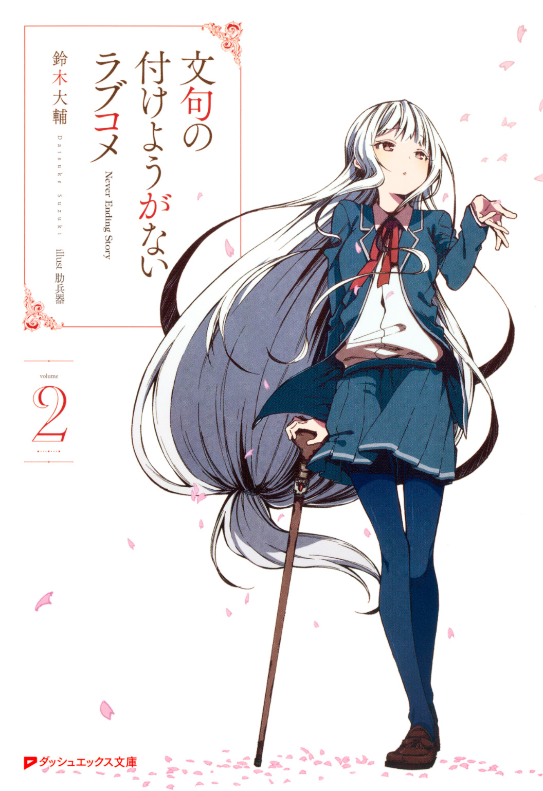
この本は縦書きでレイアウトされています。
また、ご覧になる機種により、表示の差が認められることがあります。
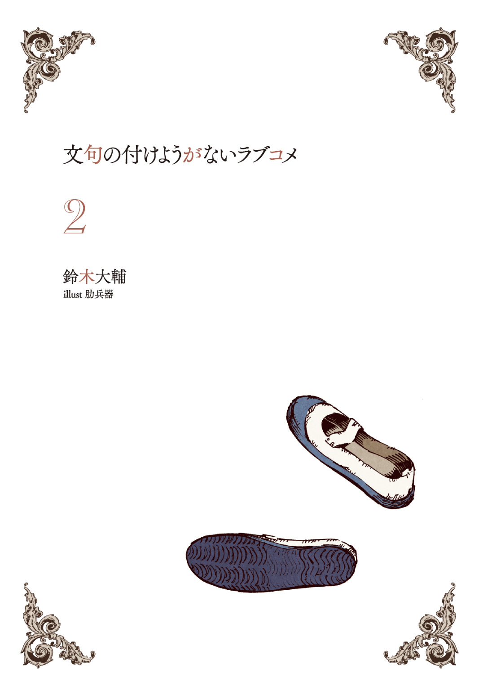
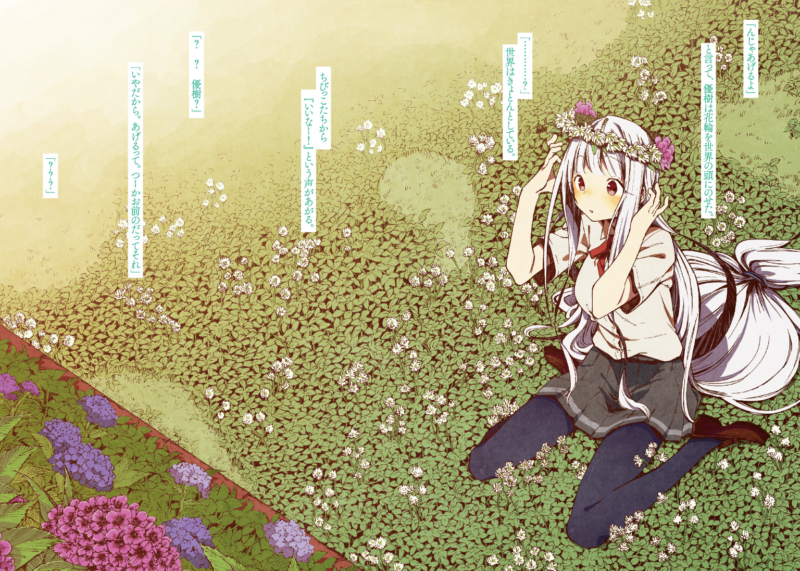
 ダッシュエックス文庫DIGITAL
ダッシュエックス文庫DIGITAL
文句の付けようがないラブコメ ２
鈴木大輔
――かくして世界は作り替えられました。
第一章
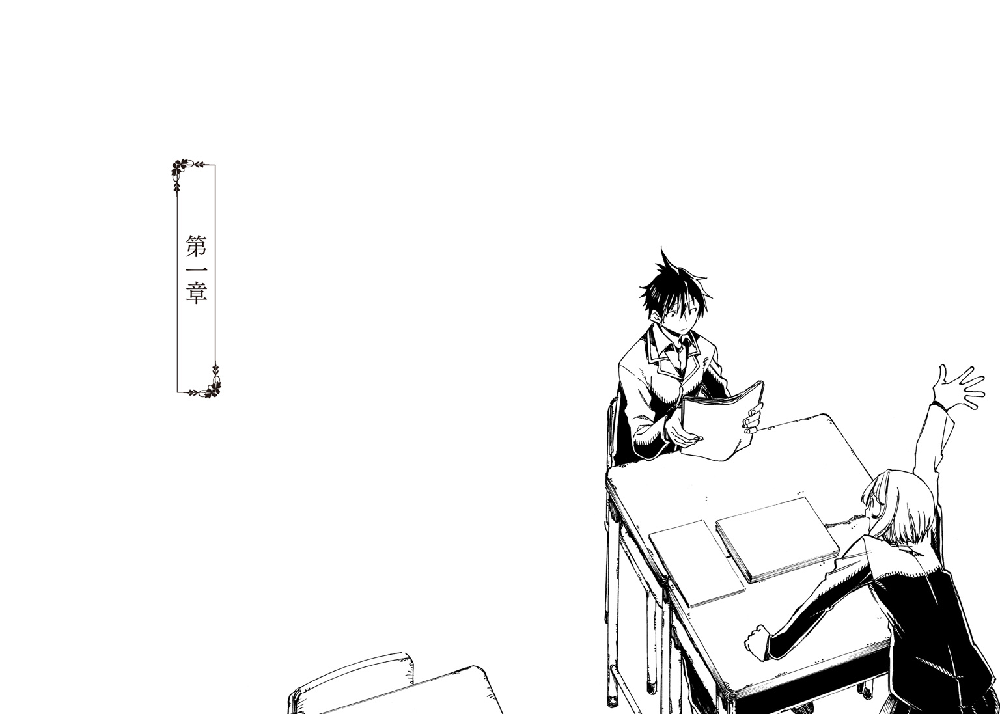
三月が終わり、春真っ盛り。
新年度であり、新学期である。
†
「いや～。それにしてもスゴかったよね～」
その日の放課後。
私立叢雲学園高等部、三年Ａ組の教室にて。
プリントを束ねる作業をしながら、小岩井来海は鼻息荒く語っていた。
「神鳴沢世界さん。わたしあんな人はじめて見たよ」
「......ん。だな」
プリントの角をそろえながら、桐島優樹はてきとうに返事をする。
「なんといっても見た目がスゴいよね！ 髪は銀色だし目は赤色だし。しかもすっごいカワイイし。背はちっちゃいのに胸はおっきいし」
「まあ。そうかな」
「それにぜったいお嬢さまだよねー彼女」
うっとりした目で来海は想像する。
「なんていうかさー、ただ立ってるだけでも雰囲気があるっていうか。おどおどしてるんだけど凛としてるっていうか。いやもーね、宝石ですよ宝石。彼女はジュエルですよ。ダイヤモンドですよ」
「そうかー。まあそうだよなー」
「はふぅ......ほんとステキだよね彼女って」
「さあなー。どうかなー」
「んもー。興味なさそうだねえ」
ふくれっ面をする来海。
ジト目で指をさしながら、
「もうちょっと話に乗ってきてよ。わたしら中学校からの友だちでしょ？ クラスだっていっしょだし学級委員同士でしょ？」
「まあそうだけど」
「それとも何ですか？ 優樹くんもお坊ちゃま育ちだから？ あんまりお嬢さまには興味がないってことですかねえ？ ああん？ これだからお金持ちは」
「別にそういうわけじゃなくて」
苦笑いする優樹。
彼が転校生に興味を持たないのには理由がある。
「だってさー。あの子って、転校してきた初日しか学校来てないじゃん」
そうなのだ。
私立叢雲学園の高等部を大いに揺るがした、神鳴沢世界なる転校生は。最初の日以来ずっと顔を見せていないのである。
「正直、学校に来ない人間のことにそんな興味持てないっていうか。そりゃすっげえ綺麗な子だったし、最初に見た時はマジびっくりしたけど」
「まあねー」
来海も苦笑いして、
「わたしもさ、見てる分には楽しいからいいけど。実際に付き合ったり話したりするのはちょっと考えちゃうよねえ。だって浮いてるもん彼女」
そうなのだ。
宝石のようにきれいな転校生ではあったけど、上手く溶け込めているかといえば話は別。むしろ明らかに溶け込めていなかった。
なにしろ転校初日、彼女に話しかける人間はひとりもいなかったのである。
異次元の存在感がある少女に、クラスメイトの誰も接しようとしなかったのだ。
転校生がやってくるということで、みんな大いに盛り上がっていたけど。あまりにも想定外のタイプがやってきたものだから、いささか扱いかねたというか。
「しかもすぐ帰っちゃったしねー」
来海はくちびるを尖らせて、
「体調が悪いとか何とか言って、ろくに授業も受けずにさ。あれじゃあこっちも話しかけるタイミングがないよ」
「まあなー。ただでさえ近寄りがたいもんなー」
「キレイすぎてもだめなのよね女って。ほんとつらいところですわー。わたしに彼氏が出来ないのも当然ですわー」
「......なんでこっちをチラチラ見るわけ？」
「むふふーん。わかってるくせにぃ」
さあわたしを褒めなさい、という顔の来海をスルーして。
優樹は転校生のことを考えた。
神鳴沢世界。
あまりにも美しくて世間離れした存在。
のんべんだらりとした日常にいきなり現れた特異点。
浮いてしまうのも無理はないと思う。
優樹とてひとことも交わさなかったし、接点はまだ何もないのだけど――あの転校生は異端すぎる。
ちょっと人間とは思えないくらいに。
†
「――ねえねえお兄さま。クイズをしませんか」
その日の夜、桐島家の庭園で。
食後のお茶をたしなみながら妹の春子が提案してきた。
「クイズ？」
優樹は首をかしげて、
「なんでまたいきなり？」
「だいいちもーん」
妹は強引だった。
じゃかじゃかじゃーん、と口で言いながら、
「女の子がこの世でいちばん嫌いなことって、なんでしょーかっ？」
「いやそんなこと言われても」
「なんでしょお―――――――かっ？？」
強引だった。
テーブルの向かい側から身を乗り出すようにして、春子は繰り返してくる。
顔は笑ってるけど目は笑ってない。
「えーっと」
すばやく頭を切りかえる。
ここは従っておくのが吉。
「そうだな、たとえば中年のおじさんの体臭とか」
「ぶぶー。ちがいます」
「中年のおじさんと満員電車に乗ること」
「ぶぶー。ちがいます」
「中年のおじさんの脂ぎったハゲ頭」
「そろそろ中年のおじさんから離れてください。失礼ですよ」
「と言われてもなあ。わからんものはわからん」
「ちなみにもう一回まちがえたら婚姻届にサインしていただきますから♥」
「いやいや。お前まだ小学生だろ？ 俺も高校生だし」
「そういう細かいことはどうでもいいんです。さあカウントダウンを始めますよ。じゅーう、きゅーう、はーち、なーな......」
無情なカウントダウン。
首を振って優樹は両手を挙げた。
「うーんダメだ。わからん。ギブアップ」
「はい残念でしたー！ それではさっそく婚姻届にサインを」
「待て。せめて正解を言え」
「往生際が悪いですねえお兄さま。どれだけじたばたしようと、明日には新婚旅行に旅立つことになるんですよ？ 兄妹でも合法的に結婚できる国へとね。むふふ♥」
「そんな国があってたまるか。いーから早く」
ジト目で促す。
春子は「ふむん」と鼻を鳴らし、
「では言わせていただきます。正解はですね――」
びしっ！
兄を指さし、目を三角にして、
「せっかくふたりだけの時間を過ごしている時に、愛するお兄さまが他の女のことを考えることです！ こんなに腹の立つことは他にありません！ きぃ悔しい！」
「それってお前の個人的な話じゃないの？ 世間一般の話じゃなくて」
「まったくもって許されることじゃありませんよね？ かわいい妹との仲むつまじいティータイムの最中に、お兄さまは明らかに上の空でした。わたしにはわかります。お兄さまの頭の中にはわたし以外の女がいました」
「そんなに上の空だったつもりはないんだけどな」
反論しつつも舌を巻かざるを得ない。
この妹のカンの鋭さは野生動物なみだ。彼女以外の女性のことを考えていたのはまったくもって事実である。
「で？ 誰のことを考えていたんです？」
身を乗り出す春子。
嘘やごまかしは許さない、という目をしている。
優樹は話して聞かせた。
銀髪の転校生。その世間離れした空気。そして初日以来、学校に来てないこと。
「ふむ」
聞き終えて妹は一息ついた。
両手で包み込んだカップに視線を落とし、しばらく考えて、
「お兄さま」
「うん」
「真面目な話をしてもいいですか？」
「どうぞ」
「その人には関わらない方がいいです」
ずばり妹は言った。
優樹は笑って、
「言うと思った。まあでもさ、相手があの転校生じゃなかったとしてもお前は同じことを言うだろうしなー」
「当然です。お兄さまに近づく虫は一匹残らず排除するべきですから。たとえば小岩井ナントカさんみたいな」
「今の発言は聞かなかったことにしよう」
「そういう個人的な事情は別にしても」
妹は真面目な顔で、
「何となくですが、あまりいい感じがしませんその人。距離を置くべきです」
「なんでそう思う？」
「カンです」
「そっか。お前のカンは当たるからなあ」
吐息して椅子の背にもたれかかる。
春子がさらに念を押す。
「興味本位で近づかないのがよろしいかと。好奇心が殺すのは猫だけではありません」
「だな。気をつけるよ」
「得てして美しいモノほど危ないですからね。バラに棘があるように」
「まったくだな」
「ちなみにわたしも棘だらけです」
「それはお前も美人だってことを仄めかしてるのか？」
「まあ心配するほどではないかもしれませんけどね。春子のように美しくて可愛いくて棘のない奇跡的なバラも、たまには存在するわけですし」
「一匹残らず虫を排除する、とか言ってたやつに棘がないとは思えんのだが」
「しかもそのバラはお兄さまひとすじなんですよ？ 早く結婚しましょうよ結婚」
聞き流すことにした。
優樹は紅茶をすする。
春子はニコニコそれを見守る。
「お兄さま」
「ん？」
「お兄さまは今、幸せですか？」
「......んん？」
いきなりの質問に面食らった。
春子はニコニコ返事を待っている。
まだ少し肌寒い、春先の庭園。
天を仰げば東京の夜空にもいくつか星が瞬いている。
「そりゃ幸せだろ。文句なしに」
恵まれてるのだ実際。
恵まれすぎていると言ってもいい。
生まれてから今日まで、なにひとつ不自由なく育ってきた。
世界的な製薬会社の御曹司に生まれ、家庭環境や親族関係も円満。人間関係も問題なく、五体満足で今日まで生きることができた。
これから先もきっとそうだろう。
幸せじゃないはずがない。
「......で？」
妹に向き直る。
疑念を笑顔のオブラートで包んで、
「なんでそんなことを訊くわけ？」
「いいえ別に。お兄さまが幸せでしたら、それで」
ニコニコ笑って妹はうなずいた。
心から笑ってはいるけど、ここではないどこか遠くを見据えているような――彼女は時おりこういう目をすることがある。
「まあなんというか」
カップに残ったお茶を飲み干しながら、優樹はうなずいてみせる。
「アドバイスありがとな。なるべく覚えておくよ」
「はい。ぜひそうしてください」
妹はふたたび笑った。
思わず頭をなでてやりたくなるような、百点満点の笑顔だった。
彼女が何を考えて『神鳴沢世界に関わるな』と言っているのかはわからない。でもできる限り、彼女の言うことは聞いてやらねばと思うのだった。
桐島春子は桐島優樹の大事な妹なのだから。
†
そして次の日。
優樹は神鳴沢世界の家の前に立っていた。
「すまんなあ妹よ......」
「え？ 何の話？」
「うんいや。こっちの話」
首をかしげる来海に答えてから、あらためて神鳴沢の屋敷に向き直る。
総武線沿いにあるここらの地区は、特定保護地域にも指定され、開発の波があまり及んでおらず、戦前に建てられた洋館があちこちに残っている。神鳴沢世界の邸宅もそのうちのひとつだ。
彼らが今日ここへやってきたのは他でもない。担任の教師に頼まれたのである。『おーい学級委員のおふたりさん。すまんがプリントを届けてやってくれないか』と。
「ところで小岩井さん」
「うん？」
「この家ってインターフォンとかないんだけど」
「そうだねえ。古いお屋敷だからねえ」
「表札もないんだけど」
「そういうお家なんだろうねえ」
優樹は左右を見回した。
静かな土地である。
車も走ってない。電車の音も聞こえない。そもそも人の気配が少ない。
どこもかしこも値段の高そうなお屋敷だらけだし、なんとなく音を立てることが憚られる。そんな感じ。
「実はさ小岩井さん」
「なあに？」
「妹に言われてるんだ。転校生には関わるなってさ」
「相手が女の子だったら誰にでもそう言うでしょ、あの妹さんは」
「でもなー。やっぱ俺もお兄ちゃんとしてさ、なるべくあいつの言うことは聞いてやりたいっていうか」
「だったらわたしとも友だち付き合いできなくなるよね」
ぐうの音も出ない。
そろそろ覚悟を決めなきゃいけないようだ。
「あーあー。ごほんごほん」
せき払いをする。
なんとなく周囲を確認。
男ならさっさといけコラー、と視線で語る来海にせっつかれ、息を吸い込んで、
「何かご用ですか？」
息が止まった。
あわてて後ろを振り返る。
いつのまにかメイドさんがいた。
なんか本式っぽいメイド服を着た、紛う方なきメイドさんである。
「おチヨ、と申します」
メイドさんは一礼して、
「本日のご用向きは？」
ふんわり微笑んだ。
物腰のやわらかい美人さんであった。
同時に油断ならなさそうな人だった。気配の消し方が手慣れすぎている。こういう手合いにはたぶんケンカしても勝てない。
「えーっとですね」
固まっている優樹に代わって来海が説明する。
彼らが神鳴沢世界のクラスメイトであること。
担任に頼まれてプリントを届けにきたこと。
「なるほど」
おチヨさんは納得した様子で、
「事情は理解いたしました。我が主をお気遣いいただきありがとうございます」
「ああいえ。こちらこそ」
なんとなく恐縮してしまう優樹。
「世界さんは」
一方の来海は堂々とした様子で、
「今はご在宅でしょうか？ できればひとことごあいさつできればと思うんですが」
「ふむ」
メイドさんは少し間を置いた。
「小岩井来海様、それに桐島優樹様とおっしゃいましたか。本日はわざわざご足労いただき、まことにありがとうございます。しかしながら――」
ふたりを順番に見て。
それからメイドさんは微笑みながら、
「我が主と関わるからには、それなりのお覚悟をいただかねばなりませんが。それでもよろしゅうございますか」
「............」
「............」
顔を見合わせる優樹と来海。
「ええと」優樹は手を挙げて、「覚悟って何の？」
「申し上げられません」
「はあ」
もう一度来海と顔を見合わせる。
それからちょっと考えて、
「ええとですねおチヨさん」
「はい」
「関わるからには、とか仰いますけど。神鳴沢世界さんはウチのクラスに転校してきたわけですし。関わらないわけにはいかないっていうか、今日ここに来てる時点でもう関わってるというか」
「はい」
「もし仮に、世界さんと関わると大変なことになる、っていうなら。彼女が俺らの学校に転校してきた時点で問題あるんじゃないかと」
「............」
メイドさんは笑顔のまま無言である。
ちょっと言い過ぎただろうか？ と心配になったけど、
「――ですね」
メイドさんはニッコリ頷いた。
それから深々とお辞儀して、
「まったくもって仰るとおりです。失礼いたしました」
「あ、いえ。こちらこそ」
「では伝えるべきことは伝えた、ということで」
門を開けながら来客を招き入れる。
「我が主のもとまでご案内いたします。どうぞこちらへ」
「あ、はい。ども」
ふたたび来海と顔を見合わせる。
（......どうしたもんかね？）
（いやいやそう言われましても）
短い時間のアイコンタクト。
出た結論は〝行くしかない〟である。
「どうぞこちらへ」
重ねてうながされ、優樹と来海は屋敷へ足を踏み入れた。
よく手入れされた庭。
さまざまな色の春の花々。
玄関を開ける。
昼間だというのに廊下は薄暗い。古い家によくあるにおいがする。
一歩踏み出すたびに床板がみしり、みしりと鳴る。
「............」
「............」
優樹は無言だった。
来海も無言である。
優樹には来海の気持ちが手に取るようにわかる。なぜなら彼もまた、彼女と同じ気持ちだったからだ。
（なんかヤバげな感じ......？）
まるで泥舟に乗って大海原へこぎ出してしまった気分。
胸騒ぎがする。
やたらと喉が渇く。
「どうぞ。我が主はこちらに」
何キロも歩かされたように思えたが、実際には二十メートルかそこらだったろう。
分厚そうな樫の扉が目の前に立ちふさがった。
「どうぞ。ご遠慮なく」
重ねてメイドさんが促してくる。
中に入れ、ということなのだろうが。二の足を踏む感は否めない。
（......どうしたもんかね？）
（いやいやそう言われましても）
ふたたびのアイコンタクト。
来海もこの雰囲気に呑まれているのだろう。かなり尻込みしているご様子。
（どうする？ 帰っちまうか？）
（ここで引き返すのはナシでしょーさすがに。男ならさっさといけコラー）
肘でつついてくる。
優樹は覚悟を決めた。
この先に何が待っているかわからないが。まさか命まで取られることはあるまい。
生唾を飲み下す。
ドアノブに手を掛ける。
扉がギギギと音を立てて開く。
扉の向こうの景色があらわになる。
そうして優樹が見たものは。
お風呂上がりで一糸まとわぬ姿の、銀髪の少女だった。
「............」
「............」
優樹も来海もポカンと口を開ける。
さんざん思わせぶりなことを言われたところへ、まったく想定していなかったこの事態である。思考も反応も追いつかない。
まさかの展開だった。
分厚そうな樫の扉の向こうは、お風呂場で、脱衣場で、絶賛使用中だったのだ。
「――ん？ おチヨか？」
銀髪少女が口を開いた。全裸で。
まぶたを閉じ、バスタオルで髪をわしわしやりながら、
「入って来るならノックぐらいはするものだぞ？ 親しき仲にも礼儀ありだ」
「はい。申し訳ございません」
メイドさんは深々と頭を下げる。
銀髪少女――神鳴沢世界はその姿が見えていない様子で、
「まあよい。ところでおチヨ、わたしの下着をどこへやったのだ？ 今日はあれを穿くと決めていたのだが」
「水色のストライプの下着、でございますか？」
「うむそれだ」
「あれはまだお洗濯したばかりですので」
「むう、そうか。ならば仕方ないな。今日はクマさんのプリントがしてある下着でがまんするとしよう」
「それでしたら目の前に畳んで置いてありますよ」
「貴殿も人が悪いな。わたしの視力があまりよくないことは知っているだろう？ お風呂上がりだからメガネもしてないし、ぜんぜん見えな――」
そこで動きが止まった。
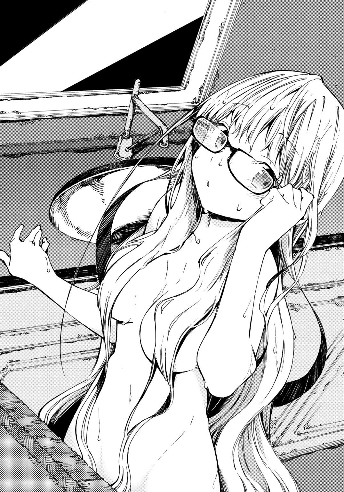
ちょうど洗面台の前に置いてあったメガネを探し当て、装着したところだった。
神鳴沢世界は視線をおチヨさんに向けている。
正確には、彼女が引き連れているふたりの人物に向けている。
「............」
メガネを取ってごしごし目をこする。
もう一度メガネをかける。
見る間に顔が赤く染まる。
哀れな悲鳴が屋敷中に響き渡った。
第二章
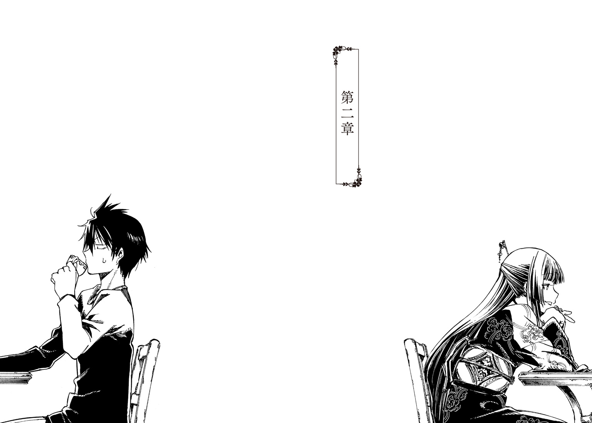
「――ほほーう。興味深い話ですね？」
桐島家の庭園、夕食後のティータイムにて。
桐島春子は何度も頷いた。
それからニッコリ笑って、
「つまりそれは、わたし以外の女性の裸を見たと。そういうことですよねお兄さま？」
「いや問題はそこじゃなくてだな」
「いいえ問題はそこです」
妹はぴしゃりとさえぎって、
「これは明らかにマナー違反です。浮気と判断して差し支えないかと」
「差し支えあるよ。そもそも俺は誰とも付き合ってない。もちろん春子、お前とも付き合っちゃいない。お前は俺の妹だからな」
「裸でしたらいつでもわたしが見せてあげるのに」
「妹の裸をみて何をどうするってんだ」
「何をって、もちろんわたしとナニをするに決まってるじゃないですか♥」
「やめんかそういう発言は。おっさんくさい」
紅茶をすすりながら優樹は顔をしかめる。
先日の一件、やはり妹に話したのはまずかったろうか？
（けっきょくあのあと引きこもっちまったんだよな......）
神鳴沢の屋敷での一件を思い出す。
おチヨさんに案内され、銀髪の転校生と二度目の対面を果たしたはいいものの。あられもない姿を見られたショックで彼女は部屋に閉じこもってしまったのである。
あいさつを交わすヒマもなかった。
屋敷を辞する際、プリントを受け取ったメイドさんは『ぜひまたお立ち寄りくださいませ』と言ってたけど。その言葉を額面どおり受け取っていいものかどうか。
「で？」
使用人に紅茶のおかわりを命じてから、春子が問う。
「わざわざそんな不愉快な話を聞かせるからには、わたしに何か相談したいことがあるのでしょう？」
「うんまあ。そうなんだな」
その一件から一週間が経っている。
が、当然というかなんというか、転校生は学校に来ていない。
今回の件は優樹のせいじゃない（はずだ。断じて）にしても、ちょっと責任を感じなくもないわけで。なおかつ彼には学級委員という立場もある。できれば神鳴沢世界がまた登校してきてくれるよう、いろいろ働きかけたいのだが、
「なんかいい方法ないかな？」
「ふむ。まあ他ならぬお兄さまの頼みですし。わたしとしても考えるのにやぶさかではありませんが」
紅茶の香りを確かめつつ、妹はジト目で、
「なにせお兄さまは浮気した上に、わたしの忠告を無視して転校生とやらに会いに行ったんですよねえ？ そんな人にタダで手を貸すわけには――」
「今夜は俺の部屋で寝ていいぞ。同じ部屋の同じベッドで」
「取り引き成立ですね！ おまかせください、春子がまたたく間にいいアイデアを考えて差し上げます！」
たちまち笑顔になる妹だった。
小学生とは思えない大人びた美貌の彼女が、こういう時ばかりは歳それなりの少女に見える。
「とはいえ」
春子は思案顔で、
「いまアドバイスできることはあまりないですけどね。とりあえず転校生との接触は続けること。まずはそこからでしょう」
そして春子は分析を始めた。
いわく、転校生はおそらく世間知らずである。
引きこもりで、外との接触はほとんど経験がなく、銀髪に赤い瞳という自分の見た目にコンプレックスを抱いている。裕福な家に生まれ住んでいることを彼女自身はプラスに考えておらず、その意味で家庭環境はあまり恵まれてなさそうだ。
しかしながら言動の端々から、素直そうな性格も見え隠れする。
加えて、少なくとも転校初日は姿を見せたことからして、学校へ通う意欲、ないしは他者とコミュニケーションを取ろうとする意欲はあるはず。
「わたしが思うに」
人差し指を立てて、
「その転校生を攻略する難易度は、人に慣れていない子猫程度のものだと思われます。適当に餌付けしていればそのうち何とかなるでしょう」
「そうかな？ まあそのくらいならありがたいけど」
「春子の分析は間違っていそうですか？」
「いや」
むしろ合っている。
優樹から見た転校生の印象と、ほとんどズレてない。
「一応わたしの方で調べておきます。その転校生のこと。なんとなく気になりますし」
「ん、そうしてくれると助かる」
「ですがお兄さま。くれぐれも深入りはしないでくださいよ？ お兄さまにはわたしという、将来を約束した相手がいるんですから」
「そんな約束をした覚えはない」
「でもお兄さまの部屋の、お兄さまのベッドでいっしょに寝ることは約束しましたからね！ さあこうしてはいられません。今日はパジャマパーティですよっ。お茶とお菓子をたくさん用意させましょう。今夜は朝まで寝かせません！」
「いやいや。寝るために俺の部屋に来るんだからなお前は？」
†
翌日。
優樹はふたたび神鳴沢の屋敷を訪れた。
「ようこそ優樹様」
メイドのおチヨさんは門の前で迎えてくれた。
まるで来客があるのを予想していたみたいに。
「お待ちいたしておりました。どうぞ中へ」
「あ、ども。すいません」
逆に優樹は何も予想していなかった。
丁寧にお出迎えされたことに面食らいながら、
「ええと。今日はアポなしで来ちゃったもんで。なんとなくふらっと。ちょっと様子でもうかがえればなあ、と」
「お気遣い感謝いたします。お連れ様は？」
「いや。今日は俺ひとりで。小岩井さんは関係なしで」
「かしこまりました。さあどうぞ」
にこにこ。
にこにこ。
とても上機嫌そうである。
かなり歓迎されてるよう――だが。裏がありそうな気がしなくもない。
「ええと。世界さんの様子はその後どんな感じでしょう？」
庭を横切り、廊下を歩きながら問いかける。
「どんな感じ、とは？」
「ええと何ていうか。この間はアクシデント的なものがあって。世界さんがお風呂上がりのところをお邪魔しちゃったので。ご機嫌いかが、みたいな」
「あれ以来、口を利いていただけません」
にこにこ。
にこにこ。
とても上機嫌そうである。
「今後は一切おチヨと口を利かない、目も合わせない、一生嫌いになる、とおっしゃって。それはもう大層な怒りようでした」
「それはなんというか......すいませんでしたホント」
「優樹様が謝られることはありません。すべてはわたしの一存でやったこと。どうぞお気になさらず」
「は、ども。恐縮です」
「胸が大きかったでしょう？」
あやうく吹き出しかけた。
おチヨさんは笑顔を崩さず、
「我が主は、ご自身のプロポーションのことをとても気にしてらっしゃいますが。じつに見事な胸だとは思いませんか？」
「は、はあ」
「思いませんか？」
「ああいえその。思います。はい」
「ぜひ本人にその感想をおっしゃってあげてくださいませ。きっとお喜びになられます」
「いやその。胸のこと気にしてるんでしょ彼女？ だったら――」
「きっとお喜びになられます」
重ねて推された。
優樹は「う、ういっす」と答えるしかない。
なんだか一筋縄じゃいかないメイドだとは思っていたが......ひとつ確信が持てた。
この人ぜったいドＳだ。優しそうだし品も良さそうだけど間違いない。
「こちらに我が主がおられます」
とある扉の前まで来た。
一度あることは二度あるもの。優樹は念のため訊いてみる。
「まさかとは思いますが」
「なんでございましょう」
「ドアを開けたらまた裸、ってことはないですよね？」
「ひょっとして期待しておいでで？」
「んなわけないでしょ」
「ご安心ください。ここはお風呂場ではございませんので」
言ってメイドさんは扉をノックした。
「おチヨです。中に入ってもよろしいでしょうか我が主？」
こんこん。
こんこん。
「............」
返事はない。
いまだに怒っているなら当然か。
〝さあどうぞ〟
おチヨさんが視線で促してくる。
ここまで来て引き下がるつもりはない。
「失礼しまーす」
扉を開ける。
部屋の中に一歩踏み入れる。
そうして優樹が見たものは。
お着替え中で下着もあらわな、銀髪の少女の姿だった。
「お風呂場でも裸でもございませんが」
おチヨさんが笑顔で言った。
「まあ着替えぐらいはしていることもありますよね」
「――お」
目をまん丸にしていた神鳴沢世界が。
顔を真っ赤にし、ぷるぷる震えながら叫んだ。
「おチヨ――――――――――――――――ッ！」
あわててテーブルの裏に隠れ、もぞもぞ服を着ながら、
「一度ならず二度までもッッ！ 何なのだ何を考えてるのだ貴殿!?」
首から上だけ出して、涙目で抗議する。
しかしメイドさんは涼しい笑顔で、
「ご来客がありましたのでお連れいたしました」
「お連れいたしました、ではないッ！ なぜあらかじめわたしにひとこと言わない!?」
「ノックはいたしました」
「ノック以外にもいろいろあるだろう!? 着替え中に連れてくる馬鹿があるか！」
「ですが我が主は、ご学友の方と仲良くなりたいとおっしゃっていたではありませんか。であればやはり、ありのままのお姿をお見せした方が」
「もっとやり方があるだろう!? 裸とか着替えを見せる以外にも、ありのままの姿を見せるやり方が他にもいろいろ！ 仮にそういう姿を見せるにしても物事には順序というものが――」
「我が主が順序を守ってちゃんと学校に通っていれば、こうしてわざわざお越しいただく必要もなかったのでは？」
「ええいうるさい黙れ！ 前回といい今回といいもう勘弁ならぬ！ 貴殿はクビだ！ 今すぐ出ていけ！」
「よろしいのですか？ わたしがいなければ、ご自分の下着がどこに仕舞ってあるのかもわからないでしょうに」
「いいから出ていけ――――っ！」
おチヨさんはにこにこしながら一礼し、踵を返した。
優樹とすれ違う際に「あとはよろしくお願い致します」とささやき残していった。そんなこと言われても困るのだが。
「まったくあやつは......」
怒りで顔を真っ赤にし、はーはーふーふー唸っていた銀髪少女だが。やがて優樹のポカン顔に気づくと別の意味で顔を赤くし、うつむいてしまった。
「あーっとその」
なんとも空気が悪い。
物理的にも雰囲気的にも。
「俺、帰った方がいい？ メイドさんもどっか行っちゃったし。また出直して」
「い、いやっ！」
銀髪少女が顔を上げる。
何やら必死そうに口を開け閉めして、
「ここにいて、うん、いい！ むしろいて、ほしい！」
「そっか。んじゃまあ、そうさせてもらうとして」
「そ、そうだっ。こういう時はお茶を出さねばならないな。なにせお客さんが来たのだからな。おーいおチヨ！ おチヨはいないか！」
「さっきクビにしたばかりだろ」
優樹は呆れながら、
「とにかく落ち着いてくれ。今日はちょっと顔を見に来ただけだから」
「そ、そうか。そうだな。うむ」
コホンコホンとせき払い。
身だしなみを整え、椅子に座って、
「すまぬが貴殿。ちょっと時間をもらってもよいだろうか」
「いいけど。何するの？」
「深呼吸だ」
「......好きなだけどうぞ」
「恩に着る」
と言って、転校生は本当に深呼吸を始めた。
（変なやつだ）
と優樹は思った。
しゃべり方がそもそもおかしい。〝貴殿〟なんていう古めかしい呼び方は初めてされた。いわゆる中二病というやつなのだろうかこの転校生は。
（とりあえず様子見かな？）
テーブルを挟み、転校生の向かいに腰掛ける。
部屋の様子を確認する。
立派な部屋だ。広くて風格がある。それでいて華美に過ぎない。
調度品といえば、本棚やベッドなど、最低限のものがあるだけ。
「なんかごめんな」
深呼吸が一息つくのを見計らって優樹は声をかける。
「ちょっと様子を見るだけ、ぐらいのつもりだったんだけどさ。やっぱ前もって連絡しとくべきだったな」
「い、いやっ」
上ずった声で転校生が答える。
首と手を勢いよく振りながら、
「気にしないでくれ。もし仮に前もって連絡したとしても、おチヨのやつはわざと黙っていただろう。あれはそういう女だ」
「そっか。ならまあ、いいんだけど」
「うむ。なのでまあ、別にいいのだ」
「............」
「............」
会話が続かなかった。
神鳴沢世界は引きこもりにふさわしく、あまりコミュ力がないらしい。
一方の優樹はとにかく相手を持て余していた。掴み所がないというか、そもそも流れについていけないというか。
（......なにしてんだろな、俺）
どうして自分は転校生とふたりきりでいるんだろう？ 誰もフォローしてくれないし。これじゃあ帰るに帰れないし。
（ええと。どうしようか）
優樹は考えた。
この息苦しさから抜け出す方法。
何か妙案はないか――と知恵をしぼったところで思い出した。
さっきメイドさんがくれたアドバイス。
「ええとさ。神鳴沢さん」
「う、うむ。なんだ？」
「君って胸、きれいだよネ」
「............」
できるだけ明るい口調で言ったつもりだった。
ちょっとおどけた感じで言ったつもり、でもあった。
万が一の時は適当にごまかすつもりで、心の準備もしていた。
だけど、
「ぁぅ......」
一瞬フリーズしていた転校生の顔がくしゃくしゃに歪んで、
「ぅぁぅ......」
リトマス紙で酸性の反応が出たみたいに赤くなって、
「うう......ぐすっ......」
目尻にじわりと涙がたまった時点で優樹はギブアップした。
「すすすすすまんごめん！ 俺が悪かった！」
土下座に近いかたちで頭を下げる。
「そう言っとけばぜったい喜ぶって！ おチヨさんが言ってたから！ だからつい！」
「......おチヨだと？」
転校生が表情を変えた。
羞恥の赤から激怒の赤へと。
「あの腐れメイドめ！」
目を三角にして吼える、
「あやつはいつもいつも！ こりもせずに！ 今度という今度は本当にクビだ！ 謝ってもぜったいに許してやらぬ！」
よほど腹に据えかねるのか、両手をぶんぶん振り、両脚をじたばたさせて怒りを表している。
ちょっと可愛かった。
その感情が表に出た。
「ぷっ......くくく」
つい吹き出してしまった優樹に気づいて、転校生の顔がまた羞恥の赤になる。
「わ、笑わなくても、いいではないかっ。わたしは本気で怒っているのだぞっ」
「ははは、ごめんごめん。いやでもなんか可笑しくてさ」
「むぐぬう......」
転校生が頬をふくらませる。
優樹はさらに問いかける。
「あのメイドさんって、いつもあんな感じなわけ？」
「うむそうなのだ。あやつは何かと機会を見つけてはわたしをオモチャにして遊ぼうとするのだ。けしからん女だ」
「へーえ。人は見かけによらないなあ」
「だまされてはいけない。あの者はいつも落ち着いていて、賢そうに見えるかもしれないが、脳みその大部分はろくなことに使っていないのだ」
「おチヨさんが苦手？」
「苦手だとも。長年わたしの面倒をみてくれていることには感謝するが、あやつはそれをいいことに好き勝手やっている節がある。まったくメイドの風上にもおけない」
「なるほどなー。実は俺もなーんか苦手なんだよなあの人。笑顔の裏で何を考えてるかわからないっていうか」
「そう、そうなのだ！ あやつは外面がいいからみんなだまされてしまうのだ！ その点、貴殿はかしこいな。腐れメイドの本性をちゃんと見抜いている。これはなかなかできることではない」
「そっか？ そりゃどうも」
「聞いてくれ貴殿。あやつは本当にひどいのだ。たとえばこの間なども――」
......この展開がすべて計算どおりなのだとしたら。あのメイドはとんでもない策士ということになるだろう。
彼女の悪口をきっかけにして、桐島優樹と神鳴沢世界は急速に打ち解けていった。
なにせおチヨさんの悪口となると、転校生はすらすらしゃべってくれるのだ。優樹は相づちを打っているだけでいい。
しばし、この場にいない人物をつるし上げる会がつづいた。
ほどなくして転校生は「......あ」と頬を赤らめて、
「す、すまない。わたしばかりしゃべりすぎた」
「いや。いいよぜんぜん」
優樹は笑って首を振る。
メイドさんもクビになったことだし、ここらが潮時だろう。
「そんじゃ俺、今日はそろそろ帰るよ」
「も、もう帰るのか......？」
「うん。ちょっと様子を見に来ただけだし」
「そうか......うん。仕方ないな」
転校生はしょんぼりうつむいた。
だけどすぐに顔をあげて、
「あ、あのっ」
「うん？」
「また来てくれるだろうか？ 今日は楽しかったから......貴殿はたくさん話を聞いてくれたし。ぜひまたいろんな話を聞いてもらいたい」
「わかった。また話をしようぜ」
優樹は笑ってうなずいた。
「うむ！ 約束だ！」
転校生も花びらが咲きこぼれるように笑い返した。
「でもさ」
優樹は釘を刺して、
「〝また来てくれるか？〟ってのは、どっちかっつーとこっちのセリフだろ」
「......むぬ？」
「神鳴沢。また学校に来てくれるか？」
「む......」
口ごもる転校生。
それからしばし、右を向いたり左を向いたり、床を見たり天井を見たり、両手の指を絡めたりしてうなっていたが。
やがて上目づかいに、恐る恐るこう言った。
「......貴殿が、学校まで連れていってくれるなら。行く」
「わかった」
優樹は即答した。
「明日の朝むかえに来るから。ちゃんと学校へ行く準備しとけよ？ 途中で気が変わったとか、やっぱやめるとか、そういうのは無しな？」
「わ、わかった。そういうのは無しだ」
「オッケー。そんじゃまた明日」
手を振りながら部屋を出た。
転校生は何度もうなずきながら、ぶんぶん手を振って見送ってくれた。
（春子が何て言うかなー......）
帰り道、妹がツノを生やす姿を思い浮かべた優樹だったが。このくらいならまあ、許してくれるだろう。そもそも彼女のアドバイスに従ったからこそ、こういう展開になったのだし。
――さて。
浮き世離れした転校生の正体が、わりと普通の少女であることは理解できた。
〝餌付け〟はこれからが本番だ。
第三章
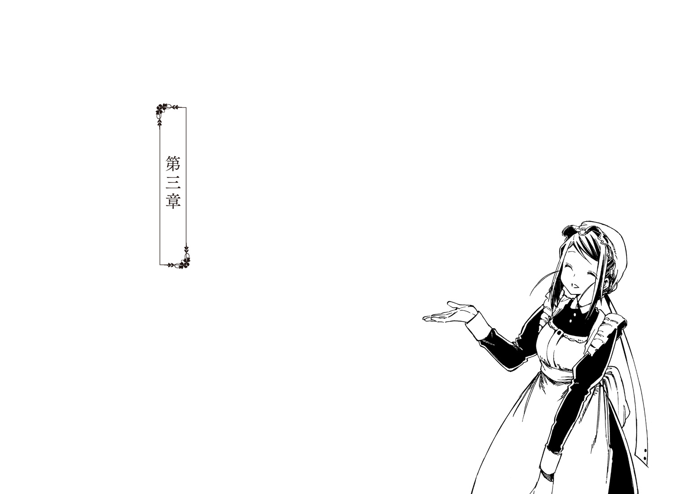
翌朝６：３０に桐島家を出て、電車を乗り継ぎ三十分と少し。
「お待ちいたしておりました」
神鳴沢の屋敷までたどり着くとメイドさんがお出迎えしてくれた。
「我が主の用意は調っております。本日はどうぞよしなに」
「いえまあ。こちらこそ」
お辞儀するメイドさんに優樹も頭を下げてから、
「しかしなんつーかおチヨさん」
「はい？」
「クビになっても何食わぬ顔でそこにいますよね」
「もちろんですとも」
うさんくさい笑顔がトレードマークのメイドさんはうさんくさく微笑みながら、
「我が主とわたしは強い絆で結ばれております。クビになった程度で離れ離れになったりしません」
「はあ。そですか」
「またあの方とわたしの間にある深い愛情は、何人をもってしても引き裂き得ないもの。磁石が引かれ合うのと同じく、元の鞘に戻るのは当然の成り行きといえるでしょう」
「神鳴沢は割と本気で嫌がってましたけどね？」
「しばしこちらでお待ちを。我が主を連れて参りますので」
スルーして屋敷の中に戻るおチヨさん。
ほどなく玄関の向こうから、なにやらやり取りする声が聞こえてくる。
「ややややっぱりやめる！ 気が変わった！」
「馬鹿をおっしゃらないでください。優樹様に迎えまでさせておきながら」
「昨日は勢いで言ってしまったのだ！ よくよく考えればわたしには無理だった！」
「今さらやめるなんて許しませんよ。さあお早く」
......もめているようだ。
さらに待つことしばし。
おチヨさんの後ろに隠れながら転校生が姿を現した。
「お待たせいたしました優樹様。......さあ我が主、ごあいさつを」
「お、お、お」
おチヨさんに押し出されて、神鳴沢世界が目の前に立った。
今日は制服姿だ。
カバンもちゃんと提げている。
うつむきもじもじしながら細い声を絞り出す。
「おはよう、ございます......っ」
「おっす。おはよ」
優樹もあいさつを返した。明るい笑顔で。
なるべく彼女の不安や心細さを取り除き、久しぶりに登校するプレッシャーを軽くしよう、という狙いだったのだが、
「ぁぅ......」
転校生は急に切なそうな顔をして、
「......ぅぅぅ」
くちびるを引き結び、ただでさえ赤い瞳を真っ赤にし、
「ぅぅっ......ぐすっ......」
泣いてしまった。
優樹はあわてて、
「え、ちょ。何かした俺？ 何かまずいこと言った？」
「ち、ちがうのだ......ひっく」
転校生は顔を覆いながら、
「感動したのだ。こうして学校の制服を着て、クラスメイトにお出迎えされて、おはようとあいさつを交わせたことが。とてもうれしいのだ......ぐすっ」
「ようございました」
おチヨさんが転校生の背中をやさしくさすった。
優樹は「は、はあ」と答えるのが精一杯だった。
「――我が主は」
優樹のそばまで寄ってきて、おチヨさんが耳打ちする。
「なにしろずっとお屋敷に引きこもっておいででしたので。何かと今後もこんな展開が続くと思われますが、どうぞよしなに」
「は、はあ」
面食らいながら同じ答えを繰り返す優樹。
一筋縄ではいかないだろうと覚悟はしていたけど。
どうやら想像以上に手が掛かりそうな予感。
†
駅まで歩く道のり。
通勤ラッシュの電車の中。
途中で立ち寄ったコンビニの缶コーヒー。
それらひとつひとつに、神鳴沢世界は感動の涙を流した。
「うう......駅までの道のりは長いのだな......ぐすっ」
「はぐう......こんなすし詰めの状態を我慢せねばならないのか......ひっく」
「はわ......こんなにまずい飲み物が、どうしてこんなに美味しいのだ......しくしく」
そのたびに優樹は「泣くこたねーだろ」と突っ込むのだが、
「す、すまない。だがわたしにとっては新鮮な経験で......」
そう言ってまたべそをかくのだった。
（......何なのこの生き物）
呆れるのを通り越して、優樹はちょっと感心してしまった。
こんなに泣いてばかりのヤツを初めて見た。こういうのも泣き上戸のジャンルに入れていいのだろうか？
「......ふう。すがすがしい気分だ」
コンビニ近くのガードレールに並んで腰掛けて。
やや落ち着きを取り戻した転校生は大きく吐息した。
「今日はたくさん感動を味わえた。これも貴殿のおかげだな。ええと......」
「優樹。桐島優樹」
「うむ優樹よ。貴殿にはお礼を言わねばならないな」
「どういたしまして......っていうか、お前が勝手に感動してただけでさ。俺はなにもしてないんだけど？」
「そんなことはない。何もかも貴殿のおかげだ」
「そうは思えんけどなあ......まあお礼はありがたく受け取っておくよ」
「うむ。そうしてくれ」
照れくさそうにはにかんだ。
それはとても魅力的な笑顔だったけど、
「ではわたしはこのあたりで帰るとしよう。ああ気にせずともよい、道は覚えたからひとりで帰れるとも」
「......はい？」
「心配はいらない。なんならおチヨを迎えに来させても」
「いやいや。まだ学校にたどり着いてもいないから。そっからが本番だろ？」
優樹は突っ込んだ。
転校生の表情がまた不安定にゆらぐ。
「うう......やはり行かねばならないのか......」
「行きたくねえの？」
優樹が問うと首を振って、
「そうではないが......き、緊張する」
「緊張って？ たとえば？」
「たとえばわたしは、人と話すことに慣れていない」
「俺とは普通に話してんじゃん」
「うむ。そうだな。貴殿はまあ、特別だ。出会い方が特殊だったから、普通に話すくらいは問題なくなってしまった」
「まあそっか。いきなりサービスシーンが二連発だったしなー」
「......ううっ......ぐすっ......」
「だあすまん！ 今のはナシ！ 軽い冗談だから！ イッツジョーク！」
なだめるのにだいぶ時間を食ってしまった。
まだ彼女の繊細さに慣れることができないでいる。吹けば飛ぶし触れば散る、綿毛のような性格の持ち主だ。
（ま、しょうがないかなー）
神鳴沢世界の背景を思う。
銀色の髪と赤い瞳。引きこもりの人生。
妙なしゃべり方に、些細なことで感動するメンタル。
屋敷には家族の姿がなかったし、メイドもおチヨさんひとりのようだし。いろいろ事情があるのだろう。このタイミングでは訊けないけど。
「うーんそうだなあ......」
しばし考えてから優樹は提案する。
「じゃあ何か作戦を考えるか？」
「作戦？」
「お前にとっては転校デビューってやつだからさ。こういうのは最初の印象が大事っていうか。インパクトが肝心っていうか」
「なるほど！」
目をキラキラさせる転校生。
それから首をかしげ、
「で？ 具体的にはどうすればいいのだ？」
「えーっとだな」
優樹は腕組みして考える。
そして気づいた。よくよく考えたら転校生のインパクトは既に十分なのだった。そのビジュアルでクラスメイトたちは一気に引き込まれていたし。
というか最初の印象はむしろ良かったのだ。その後が問題だっただけで。
「とりあえずさ」
ちょっと方向を変えて提案してみる。
「しゃべり方、変えてみない？」
「むう？ 何をどう変えるのだ？」
「ほら、まさにそのしゃべり方だよ。堅苦しいしとっつきにくい。特に人のことを『貴殿』とか呼んだりするだろ？ あれがよくないな」
「そ、そうか。よくないのか」
「正直すげー浮いてるよ。もっと普通にしゃべろうぜ普通に」
「しかし、わたしはこのしゃべり方に慣れてしまっているから......」
「そこは気合と根性で直そうぜ。ちょっと試しにやってみよう」
「わ、わかった」
こくこくうなずき、転校生は表情を引きしめる。
「とりあえず適当に話をしてみようか。......えーとじゃあ、好きな食べ物とかは？ なにかある？」
「と、特に好き嫌いはありません。何でもわたしは食べられます」
「好きな季節ってある？ ちなみに俺は春が好き」
「わたしはどんな季節でも好きです。季節にはそれぞれの良さがあって、わたしはそのどれもがとても良いと思います」
「おチヨさんって、ほんとひどい人だよな」
「まったくもってそのとおりです。あの人はとても性格が悪くて意地悪です。わたしはいつか、あの人をぎゃふんと言わせることができればいいと思います。でもあの人をクビにすると、わたしは自分の身の回りのことが何もできなくなるので、クビにすることができません。とても悲しいです」
「............」
「ど、どうだろうか？」
「うーん......」
天を仰いだ。
なんかちがう。
まるで英語の文章をそのまま直訳したみたいな。
それに表情がめちゃくちゃ硬い。息をするのをガマンしてるみたいな顔で力いっぱいしゃべるものだから、聞く方も肩が凝ってしまう。
「よし。じゃあ次いってみよう」
「ふむ？ しゃべり方はもうこれでいいのか？」
「要するに緊張さえしなければいいわけでさ。そのための方法を見つければ話が早いんじゃないかと」
「なるほど。貴殿は頭がいいな」
こくこく頷く転校生。
「で？ どんな方法があるのだ？」
「たとえばまあ、手のひらに『人』の字を書いて飲み込むとか」
「それはおまじない程度の効果しかないのでは？」
「そんじゃ深呼吸してみるとか」
「あまり効かないな。わたしはよくやっているからわかる」
「とにかく場数を踏む」
「それができないから苦労しているのではないか」
おっしゃるとおりだった。
どうやらベタなやり方はあまり期待できそうにない。
「まあ何ていうかなー。こういうやり方ってひとりひとり違うもんだしなー。そうそう簡単に見つかるもんじゃないかも」
「なるほど。貴殿の言うとおりだ」
「何かないの？ これさえすれば落ち着ける、みたいな何か」
「むぅ」
転校生は難しい顔をする。
それから言いづらそうに、
「ないことはない、のだが......うーん」
「お、あるの？ じゃあそれでいいじゃん」
「いや、あるにはあるのだが。うーん......」
「なんだよ。もったいぶんなよ」
優樹は催促した。
転校生はしばらくためらった後、カバンの中から何かを取りだした。
「これなのだが」
「......んん？」
目を細めてのぞき込んだ。
優樹にとっては見慣れたものだった。
シガレットケースと、そこに並んだ葉巻である。
「これを吸っていれば、わりと落ち着けると思うのだが......どうだ？」
「いやあ......どうですかね？ これは」
「ダメか？」
「ダメですな」
「そうか。そうであろうなあ」
はあ、とため息をつく転校生。
優樹もつられてため息をつく。
「つーかお前、見かけによらないっていうか何ていうか。葉巻なんて吸うのな」
「うむ、まあ。たしなむ程度にはな」
「じつは俺も吸ってたんだ昔」
「そうなのか!? じゃあわたしたちは仲間だな！」
「ちなみに今は」
優樹もカバンをごそごそ探って、
「これを代わりにやってんだけど」
「おおっ！」
転校生が身を乗り出した。
「これはシガレットチョコだな!?」
「おう。お前も好きなのか？」
「好きも何も」
ふたたび転校生はカバンを探って、
「わたしもほら、持っている。シガレットチョコ。葉巻の代わりにこれを食べていると、けっこう気分が紛れるのだ」
「......ははあ～」
優樹は目を丸くした。
転校生が手に取ったのはまさにシガレットチョコで、しかも優樹と同じ銘柄である。
「こんな偶然もあるんだな」
「まったくだ。なんだか貴殿のことを他人と思えなくなってきたよ」
言って、彼女は「えへへ」と笑った。
いい笑顔だった。
優樹が初めて見る、神鳴沢世界の心からの笑顔だった。
「――でもまあ、あれだ」
照れ臭くなって頭をかきながら、
「何にしても使えないな。ずっと咥えっぱなしでいるわけにもいかんしな、葉巻にしてもシガレットチョコにしても。学校じゃ無理だわ」
「そうか。やむを得ないな」
転校生はしょんぼり肩を落とす。
そうしてみて初めて気づいた。彼女の顔色があまり良くない。もともと透けるように白い肌をしてるけど、それ以外の理由で具合が優れない様子だ。
「だいじょうぶか？ 体調悪そうだけど」
「うむ、いや。問題ない。気にするな」
「だいじょうぶじゃねえだろぜんぜん」
よく見ればうっすら汗もかいている。呼吸も浅い。
「うーんこりゃあ。学校行っても保健室行きだろうな」
「う......む」
「今日は無理だな学校。大人しく家で休んどいた方がいい」
†
おチヨさんに連絡すると、すぐに彼女は飛んできた。
迎えの車はどこにでもありそうな白いコンパクトカー。予想される神鳴沢家の経済状況から考えると、ちょっと意外な車種である。
「またお願いできるだろうか？」
別れ際、転校生は不安げな顔でそう言った。
「また貴殿といっしょに学校へ行きたい。今度はちゃんと学校にたどり着きたい」
「おう。まあなんとかやってみるよ」
やや中途半端な頷きに、彼女は「約束だぞっ！」と笑って返すのだった。
†
こうして神鳴沢世界との最初の登校は、途中退場という不名誉な結果に終わった。
もちろんこの時の優樹は知るよしもない。
彼女の存在と彼女との接触はこれ以降、想像以上にやっかいな問題となって、彼の両肩にのしかかってくるのである。
第四章
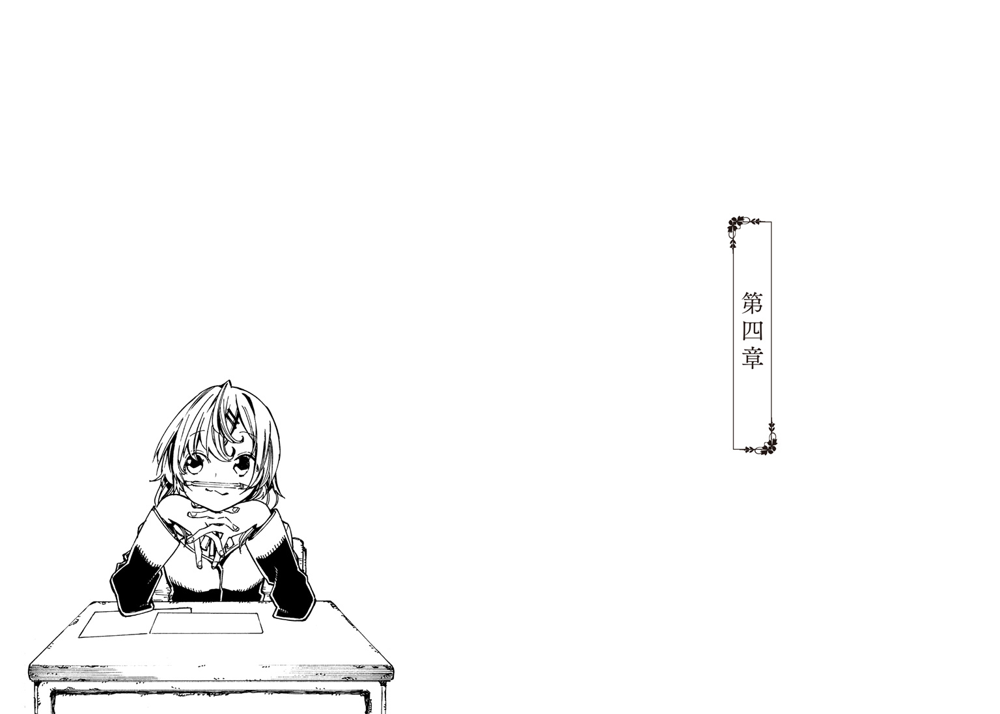
「ふーん。やっぱ大変そうだねー」
後日。
私立叢雲学園高等部、三年Ａ組の教室にて。小岩井来海はひとことで感想をまとめた。
鼻とくちびるの間にシャーペンをはさみながら、
「いや、それにしても大変だよ優樹くん。神鳴沢さんの面倒見るのって普通じゃないと思うよ。いやすごいね。学級委員の鑑だね」
「小岩井さんも学級委員だろ？ 手伝ってくれたりしない？」
「いやー。わたしあんまりお節介は好きじゃないしー」
机を向かい合ってふたり。
彼らは先生に頼まれて、授業用のプリントをまとめている最中である。
放課後の教室には優樹と来海だけ。他に生徒の姿はない。
「むしろわたしは優樹くんがちょっと意外かな」
「意外って何が」
「神鳴沢さんの面倒見てるのがよ。優樹くんって普通にいい人だと思うけど、面倒見がいい感じじゃなかったじゃん？」
「そうかな」
「そうだよ。スカしてる感じでもないけど、熱血でアツい系ともちがう、みたいな。だから意外だよ今の状況は」
「自分ではさ」
軽く肩のストレッチをしながら、
「状況に応じて流れのままに、って感じだけど。今回もまあ、そういう役目が回ってきたみたいだからさ。それでやってる的な」
「つまり流されやすいってことね」
「......まあ否定できないっすけど」
「ま、あれだよね。優樹くんが学級委員やってるのもあたしに言われたからだもんね」
「言われたからっていうか、すっげーしつこかったんだよ小岩井さんのお誘いは。いっしょに学級委員やろうよー、って毎日言われたし」
「迷惑だった？」
「いや。すげーありがたかった」
「ならばよし」
えっへんと胸を張る来海。
優樹はちょっと苦笑い。
夕暮れ近いグラウンドから、野球部がランニングするかけ声が聞こえてくる。
「で？ どうするのこれから？」
「どうするって何が」
「これからもあの子の面倒見るの？ 学校に来るまで？」
「そりゃまあ」
転入してきて五月になった今も、神鳴沢世界はまだ学校に来ていない。
体調不良やら能力の不足やら、理由は様々である。それでもいつかはちゃんと学校に行きたい、という意思だけはちゃんとあるようなのだ。
であればやはり。
できればその望みを叶える手助けをしたい、と思うのは人情じゃあるまいか。
「それにさ」
苦笑いしながらこう付け足す。
「神鳴沢ってかなり浮いたキャラだろ？ それ、わりと俺も同じだからさ」
「まあねー」
吐息しながら来海。
「昔から浮いてたもんね優樹くんって。ほんと昔っから」
「あはは。いやまあ」
「優樹くん家ってさー、すっごいお金持ちだからさー。普通はもっとお金持ちの学校に行くじゃん？ なのにウチみたいな普通の学校に通ってるし」
「なんかそういうセレブ的なのって苦手なもんで」
「しかもやたら腕っ節は強いよね？」
「いちおう鍛えてはいるんで。こう見えて」
「そのくせ大人しく一般庶民して、普通っぽくしてるのかっていえばさ。揉めごとに首突っ込んでケンカして問題児あつかいされたりさ」
「曲がったことが嫌いで真っ直ぐな男、ってことだよ。むしろ褒めてくれよ」
「目つき悪いから誤解されやすいし」
「そこはいいだろ生まれつきなんだから！」
ムキになる優樹。
来海は「ははん」と鼻で笑って、
「ま、わたしというやさしくて面倒見がよくて可愛い同級生がいたおかげでさ。だいぶ優樹くんは救われてると思うけど」
「ハイ、その点はもう。ひたすら恩に着るしかないっす、ハイ」
「わたしがいなかったら優樹くんってぼっちだよね、ぶっちゃけ。今も昔も」
「うっす、それはもう。まったく反論の余地がありませんでして、押忍」
「感謝してる？」
「してます。めっちゃしてます」
「わたしのこと好き？」
「ええそれはもう。めっちゃ好きっす。いやマジで」
「ふむ。まあよろしい」
来海はニッコリ笑う。
優樹は内心でホッと一息つく。
彼女との間にたくさん貸し借りがあるのは事実である。だからこそ春子も小岩井来海を排除しきることができないわけで。
「ま、いいことだとは思うよ」
来海はおどけた調子で頬杖をつきながら、
「そりゃできればさ、神鳴沢さんには学校に来てもらいたいですよ、わたしも」
「だろ？」
「わたし学級委員だし、可愛い子は大好きだし。もしあの子がうちのクラスに溶け込んでくれたら、すっごい楽しいと思いますよ」
「だろ？ だろ？ だったら――」
「でもわたしはがんばりません」
ニッコリ笑って来海は言った。
「なので、がんばる役目は優樹くんに譲ります。神鳴沢さんを学校に来させて、その上でちゃんと溶け込めるようにするのはお任せします。よろしくね」
†
実際これは転校生にとってピンチだった。
三年Ａ組における、あるいは叢雲学園における神鳴沢世界の存在感は、日に日に弱くなっている。
クラスメイトたちは彼女のことを話題にしなくなった。最初はみんな大騒ぎだったのに薄情なものだ――とは思うけど、それもまた人情というもの。姿を見せない人間を気にかけ続けるほど高校三年生はヒマじゃない。
例外は優樹と来海、そして職務放棄のできない担任の先生ぐらいのものである。
そしてとある日。
その担任に呼ばれてこう言われた。
『神鳴沢のことよろしく頼むな、桐島』
『はあ』
......頼まれてしまった。
いやそんなこと言われてもなあ、と思ったけど断らなかった。
体のいい厄介ばらいをされた転校生に同情した、というのもある。学級委員の仕事に含まれることだとも思ったし、友だちがろくにいない優樹はわりと時間に余裕もあった。
でもそれより何より。
神鳴沢世界という人間に興味を持ったのだ。
人間離れした見た目と雰囲気。素直で世間ずれしてない性格。その他もろもろ。
知りたいと思った。
あの転校生はいったいどんなヤツなのか。
†
ドアを開けるとそこは酒池肉林だった。
「――お」
アルコールの香り。
漂う香ばしい煙。
半裸姿の少女。
「おチヨ――――――――ッ！」
そして激怒の悲鳴。
「貴殿はクビだ今度こそぜったい許さない！ 優樹が来る時はちゃんとそう言えと言ったはずだし貴殿は神妙な顔で承知しましたと言っただろう出ていけ今すぐ出ていけ！」
椅子の裏に隠れ、いそいで服を着ながら。神鳴沢世界は一気にまくし立てた。
「それでは優樹様」
部屋まで案内してくれたおチヨさんがお辞儀をして、
「わたしはクビになりましたのでこれにて失礼いたします。あとはよしなに」
「あ、はい。ども」
踵を返すメイドさんを、優樹は頭を掻きながら見送る。こりない人だと思いながら。
「うううあの腐れメイド......！」
涙目で世界が呪いを吐く。
「謝ってもぜったいに許してやらぬ......わたしはあやつが道ばたでのたれ死にするのを願ってやまないぞ......」
「俺もその意見に賛成。あのメイドさんは一度こりた方がいい」
「うむ！ まったくだ！」
「ところで――」
部屋をぐるりと見回して。
優樹はあきれた。
「派手にやってんなあお前」
「む。いやこれは」
口ごもる世界だった。
テーブルには所狭しと並べられた酒瓶。そして葉巻の吸い殻の山。
「貴殿に見せるつもりはなかったのだ」
しどろもどろの言い訳が始まる、
「褒められた趣味でないことは知っている。だから隠れてこっそりやるつもりだったのだ。本当だ。信じてくれ」
「隠れててもダメなもんはダメだと思うが」
「それにわたしは長らく酒も葉巻もやめていたのだ。しかし最近はいろいろ気が重いことが多くて、それでつい手を出してしまったのだ」
「アル中とか禁煙に失敗したヤツが言いそうなセリフだな」
「......うう......ぐすっ」
「ええいやめんか。泣くほどのことかっつーの」
べそをかく部屋の主をなだめ、優樹は空いてる椅子に座る。
泣き止んだ世界も向かい側に座って、
「ともあれ歓迎するよ優樹。よく来てくれた」
「どういたしまして。ところでお前、あいかわらず学校こないな」
「むぐ......面目ない」
しょげ返る世界。
優樹はなるべく明るい声で、
「何ならいっしょに学校行こうか？ また明日あたりどう？」
「......気持ちはありがたいが、自信がない」
「自信がない？」
「先日つくづく思い知らされた。貴殿が付き添って学校に行こうとしてくれたあの日だ。わたしにはやはり、学校に行く才能がないのだ」
斬新な表現だった。
だけどなるほどとも思う。決められた日、決められた時間にきちんと学校へ行くには、それなりのスキルなり社会経験なりが必要なのだ。そうでなければ不登校なんて現象は存在しないわけで。
「ま、学校なんて別に行かなくていいけど」
優樹は本音を言った。
「学校行かなきゃぜったい人生やっていけない、ってわけじゃないし。才能がないってんならなおさらじゃん？ 他に才能あること探せばいい的な」
「......むぬ」
「それに神鳴沢ってさ、これだけいい家で暮らしてて、しかもメイドさんまでいるんだからさ。不自由はあっても生きてくのに困る、ってことはないだろ？ だったら行かなくてもいいよ学校。無理しなくていいって」
「............」
世界はうつむいた。
眉間にしわを寄せたり、両手の指をからませたり、口をへの字にしたりしている。
「でも」
それから小さな声でこう言った。
「でもやっぱり、わたしは行ってみたい。学校に。一度ちゃんと通ってみたい。そうしないと、わたしは――うん、なんだかな。胸を張って生きていけない気がするんだ」
「わかった。じゃあ手伝う」
即答した。
「行きたいけど行けなくて、でもやっぱり行きたいんだな？ いいよ、じゃあ手伝う。お前が学校に行って上手くやれるまで付き合うよ」
「......本当に？」
「まあぶっちゃけるとだな。俺もあんまり学校には馴染めてないんだよな。だからお互い様なんだ。んでさ、できれば俺も、もうちょっと上手くやっていきたいし。だから一緒にがんばってみるみたいな。そんなんでどう？」
「............」
世界の表情がちょっと明るくなった。
こくこく、こくこく、と何度もうなずいて、
「うん、なるほど。いいと思う。とてもいいと思う。やろうではないか優樹。わたしたちふたりで何とかやってみよう」
「おう。そうしようぜ」
優樹も笑ってうなずいた。
これでまずは第一歩。
「で、だな。まずはやっぱ作戦を考えないといかんのだな」
「作戦？」
「普通に学校に行こうとしてもダメなのはわかったからさ。いろいろ方法を考えてみようっていう」
「ふむふむ」
「学校に行けるようになる方法もだし、学校で馴染めるようになる方法もだし。とにかくいろいろだ」
「優樹には何かアイデアがあるのか？」
「まあな。いちおう考えてはきたんだが――」
少し間を置く。
世界は身を乗り出して聞いている。
「まずは髪だ。お前のその真っ白い髪。それと赤い目」
「むう？」
「それって元々その色なのか？ それとも染めたりしてんのか？」
「もともとの色だが、それが？」
「じゃあ普通の色にしようぜ。髪は黒にして目は色つきのコンタクトレンズにして。それでだいぶ変わるぞ？」
なんせ神鳴沢世界は異質すぎるのである。
誰もが振り返るほど整った顔立ち。
どこか浮き世ばなれした雰囲気。
いずれもコミュニティに溶け込む際に一悶着ありそうな要素だが――何より髪の色と目の色が大きい。これじゃあ学校に通ったところで簡単には溶け込めないだろう。
「ふむ......」
世界は視線を落とした。
自分の白い髪をそっと撫でながら、
「とてもいいアイデアだが......すまない、あまり気が進まない」
「なんで？ なんかポリシーでもあんの？」
「そういうわけではない」
「今さら変えるのが嫌？」
「それとも少しちがう。何というか――」
髪に触れ、まぶたに触れつつ、
「わたしは長い間これと付き合ってきた。他の人間とちがうことを嫌だと思うこともあった。でも、これはもうわたしの一部だ。できれば変えたくない」
「ははあ。なるほど」
「もしくはあれだ。髪という字は長い友だちと書くだろう？ その友だちと別れるみたいで、なんだか悲しくなるのだ。ものすごく申し訳ないのだが――でも、うん。やはり、これはできれば切りたくない」
「そっか。じゃあしょうがないな」
「き、気を悪くしただろうか......？」
「そんなことで？ しねえよ」
ふむ、と優樹はあごを撫でる。
実のところ、今のがいちばん手っ取り早くて確実に効果がありそうなアイデアだったのだが。無理ならば仕方ない。
そして悲しいことに、他に手っ取り早そうなアイデアはないのだった。
「あとはそうだなあ。名前を変えるとか」
「名前を？」
「だってお前の名前ってさ、なんか大げさすぎるって。神鳴沢はともかく世界だぜ？ ザ・ワールドだぜ？ ペンネームとかじゃなきゃそんな名前つけないよ普通」
「......わたしはもう、この名前でずっと通っているのだが」
「山田花子にしてみない？」
「そ、それはちょっと......」
「なにぃ気にくわないだと？ 全国の山田花子さんに謝れコノヤロー」
とは言ったものの。
優樹だって、今から山田太郎という名前に変えろと言われたらちょっと嫌だ。
「うん。お手上げだな」
両手をあげてみせる優樹。
「なんかもう方法がないわ。うん無理」
「そ、そんな......ぐすっ」
「人の話は最後まで聞けよ。手っ取り早い方法がなくなった、ってだけだ」
とはいえすぐには何も思いつかない。
ちょっと考えて、それからカバンの中をごそごそ探って、
「まあとりあえず。これでもどうだ？」
「......む？」
「シガレットチョコ。食べてると少しは落ち着くんだろ？」
言われて世界は一本受け取る。
先っぽをがじがじ囓る。泣きべそも少しは引っ込む。
「うまいか？」
「......もともとうまいものではない。でも安心する」
「オッケー。じゃあゆっくり考えようぜ」
椅子に深く腰掛けた。
優樹もシガレットチョコを口にくわえる。
季節は五月。
穏やかな陽気、庭木に茂る新緑、枝に止まってさえずる鳥の声。
「そもそもだな」
チョコを腹に収めてから切り出す、
「俺はお前のことをろくに知らないんだよな。まずそれがよくない」
「よくないとは？」
「知らないヤツにいろいろアドバイスしてもなあ、やっぱなあ。上手くいかないと思うわけです。カウンセリングってやつは、まずは相手を知ることからだろ？」
「なるほど。理に適っている」
「つーわけで教えてくれ。いろいろと」
「教えろと言われても」
世界は困った顔をして、
「わたしは見ての通りの存在だよ。引きこもりで臆病で、しゃべり方が変だ。人付き合いの経験も足りない。見た目はご覧のとおり。家庭環境は――まあだいたい想像がつくであろう？」
「まあなー。想像つくよなー」
「だから話せることは多くないのだ」
そう言って、彼女はさらに困った顔をした。
（まあいいか）
と優樹は思う。
（付き合う時間が長くなれば嫌でもわかってくるだろ）
それにこの引きこもり少女は、あまり込み入ったことを訊かれたくなさそうである。ならばこれ以上は訊くまい。またその段階でもない。
「それよりもだな」
世界は遠慮がちに、
「わたしは貴殿のことが知りたい」
「俺のこと？」
「うむ。わたしは貴殿のことをあまり知らない。だから貴殿のことが知りたい」
「そっかー。俺のことかー」
「別によいであろう？ そもそも今の状況は不公平なのだ。貴殿はわたしのことをどんどん知っていくのに、わたしはそうではないのだから」
なるほどであった。
誰かのことを知りたいなら、自分のことを知ってもらうのが近道。関係を深めることはお互いを知ることとニアイコールだ。
「おしわかった。そんじゃ俺のことを教えよう」
「うむっ。ぜひ教えてほしい」
「つーわけで俺ん家に行こうか？」
「......へっ？」
きょとんとする世界。
優樹はさらに続けて、
「それがいちばん手っ取り早いだろ。俺ん家に来れば、俺のことは嫌でもいろいろわかるんだしさ。もちろん無理にとは言わない――」
「無理ではない！ 行く！ すごく行きたい！」
「じゃあこれから行くか？」
「行く！」
......そういうことになった。
うっかり見落としていたけどこれはグッドアイデアだろう。お互いの理解が深まるのはもちろん、脱・引きこもりの第一歩にもなる。まさに一石二鳥であり、デメリットも見当たらない。
ただ一点を除いては。
†
案の定、妹はめちゃくちゃ不機嫌だった。
「お引き取りください」
そして第一声がこれだった。
「今すぐ回れ右をして帰ってください。そして二度と姿を見せないでください」
「こらこら春子」
ぶんむくれた顔で毒を吐く妹を、優樹はたしなめる。
「お客さんに対してなんてこと言うんだ。もっと笑顔で笑顔で」
「嫌です。わが桐島家には泥棒猫に愛想を振りまくしきたりはありませんので」
「まあそう言うなって」
桐島家のエントランスにて。
先ほどから兄妹の押し問答が続いている。
「とにかくお引き取りを」
なおも春子は一点張りで、
「そもそもいきなり押しかけるなんて非常識です。百歩譲って我が家の敷居をまたぐのを許すにしても、あらかじめひとことあってしかるべきでしょう」
「あらかじめひとこと言ったら、お前ぜったい反対するじゃん」
「当たり前です。この家に入っていい女性は桐島家の人間と、あとはせいぜいお手伝いのメイドぐらいです。それ以外はお兄さまにまとわりつく害虫とみなして、即座に排除させていただきます」
「......ごめんな神鳴沢」
優樹は小声で声をかける。
「ウチの妹はいつもあんな感じだけど。俺がそばにいれば手を出さないから。そこは安心してくれ」
「だだだだいじょうぶだ」
世界はこくこくうなずいて、
「問題ないぞ優樹。わたしはぜんぜん怖くない。さっきから貴殿の妹御がわたしに殺意を向けてきているが、わたしは気にしないぞ。うん。気にしない」
無理に笑顔を作った。
実際には作りきることができず、半泣きの顔をひきつらせるだけだったが。
「とにかくお引き取りください」
腕を組み、胸を反らして、妹は重ねて繰り返す。
頑として譲る気はないようだ。その姿はまさに仁王立ちである。
（ガンコだからなこいつは......）
優樹はため息をついた。
彼が則天武后の生まれ変わりだと確信しているこの妹は、桐島家における発言力がとても強い。今後のことも踏まえると、今ここで妹を丸め込んでおきたい。
優樹は考えた。
そして一計を案じた。
「なあ春子」
「無駄です。なんと言われようとわたしは首を縦に振りません」
「まあそうだよな。お前っていちど言ったことはぜったい曲げないもんな。そこがお前のいいところだもんな」
「ええそれがわたしのいいところですが。それが何か？」
「〝この家に入っていい女の条件〟みたいなのをお前は言ってたけど。何だっけ」
「桐島家の人間と、あとはせいぜいお手伝いのメイドぐらいだ、と言いましたが。それが何か？」
「そうだよな。確かそう言ってたよな」
納得顔でうなずく優樹。
それからニッコリ笑って、
「メイドならいいんだよな？」
「はい？」
「メイドなら。いいんだよな？」
†
意外にも世界はノリノリであった。
「メイド服？ それはよいアイデアだ！」
「じつは一度着てみたかったのだ。メイド服はかわいいからな」
「これまでは着る機会もなかったが、まさかこういうタイミングに恵まれるとは。さあ着てみよう。さっそく着てみよう」
探してみると、桐島家のメイドが使う服の予備がすぐに見つかった。
あとはあっという間の出来事である。
クビになったおチヨさんに連絡すると、彼女はすぐさま飛んできて着替えを手伝った。春子にしてみれば後の祭りである。あまりにもとんとん拍子に話が進んで、抗議の口を挟む間がない。
そんなこんなで。
モデルチェンジした神鳴沢世界のお披露目となった。
「......ははあ。これはこれは」
「......むぐぬぅ」
「よくお似合いでございましょう？」
優樹。
春子。
おチヨさん。
桐島家の応接間にて、それぞれのコメントである。
「ほ、本当に似合うだろうか......？」
紺のロングワンピースに白いエプロン。正統派のメイドスタイルに身を包み、世界は照れくさそうにもじもじしている。
「自信をお持ちくださいませ我が主」
おチヨさんは胸を張りながら、
「世界中の誰よりもお似合いですし、お美しゅうございますよ。優樹様もそう思われますよね？」
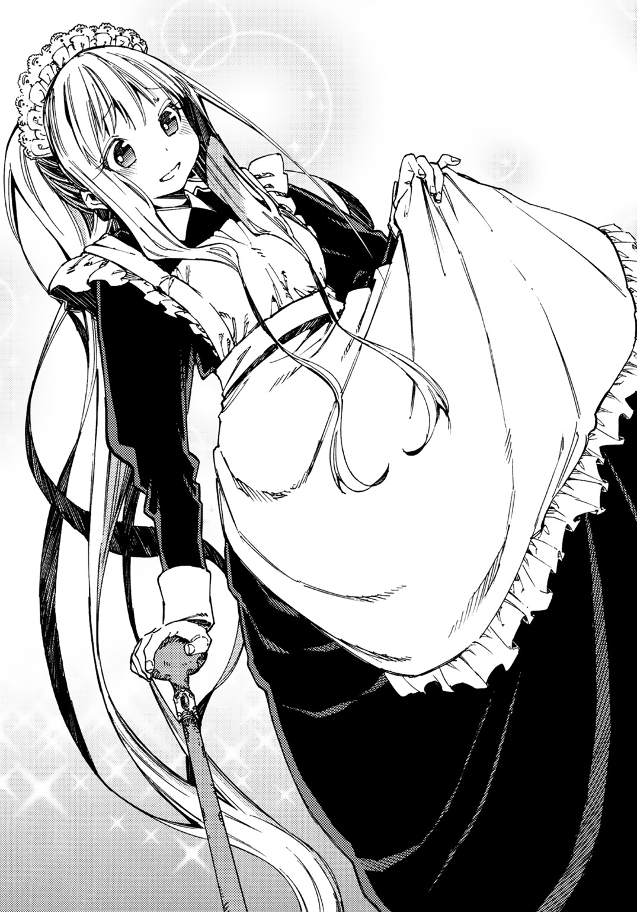
「ですね。すっごい似合ってますよね」
優樹がうなずき、おチヨさんはさらに胸を張って、
「春子さまもそう思われますよね？」
「......むぐぬぅ」
春子は苦虫を噛み潰したような顔をした。
腹立たしいが認めざるを得ない、という様子である。
「そ、そうか。似合っているか」
世界はむずがゆそうに目を細める。
スカートの部分をつまみ上げて、くるりと一回転してみせる。
えへへとはにかむ。
それらの仕草のどれもが様になっている。
「うん。いいな。めちゃくちゃいい」
「我が主は何を着ても似合うということです」
「......むぐぬぅ」
優樹とおチヨさんは褒めちぎっているけど、春子だけは気に入らないようだ。
いらいらした様子で貧乏ゆすりしながら、
「まだ喜ぶのは早いですよっ！」
世界に指を突きつける。
「百歩譲って我が家の敷居をまたぐのは許しますが、メイド服を着ているだけではメイドとは言えません。そうでしょう神鳴沢世界さん？」
「むぬ......？」
「メイドであるからには当然、メイドの仕事をしてもらいます。まずはお茶くみからです。さあ早く！ Hurry up!」
「お茶くみか！」
世界は目を輝かせて、
「一度やってみたかったのだ。ぜひわたしに任せてもらおう。――おチヨ！」
「はい我が主」
「よろしく頼むぞ。わたしにお茶のいれ方を教えてくれ」
「かしこまりました。――では春子さまのご命令をいただき、お茶をいれて参ります。当然、お台所はお貸しいただけますよね？」
ふたりのメイドは意気揚々とお茶くみに向かった。
「ええい腹立たしい！」
ぼふんっ！
ソファに腰を沈め、春子は親指を噛みながら、
「次はどうやってイビってあげましょうか......とりあえず床の掃除でもさせましょうかね。それでホコリが一粒でも落ちていたら、徹底的に言葉責めしてやるんです。泣いてもぜったい許してあげません」
「こら春子。いいかげんにしとけよ？ お客さんだからなあいつは」
「招かれざる客に親切にしてあげる筋合いはありません。というか何ですか、もうひとりのあのメイドは？ 何食わぬ顔で我が家にあがりこんで、当たり前のようにメイドとして振る舞っていますけど」
「おチヨさんはああいう人だから。あまり気にするな」
「そのおチヨさんとやらもわたしは気に入りません。あの涼しい笑顔がムカつきます。なので彼女もついでにイビってあげましょう。メイドとしてどれほどの能力を持っているのか見極めてやります」
ニヤリ。
悪そうにくちびるをつり上げる春子だった。
「なあ春子」
「なんですか」
「なんか小姑っぽいぞお前」
「失礼な!? わたしはまだ小学生です！」
そうこうしてる間に、世界とおチヨさんがふたたび姿を見せた。
スチールのワゴンにティーセット一式を乗せて運んでくる。
アッサムかダージリンか。紅茶のよい香りがふんわりと。
「お待たせいたしました」
「お、お待たせいたしましたっ」
おチヨさんに続いて一礼する世界。
そしてちょっと危うい手つきでお茶をいれはじめる。
彼女ひとりではおぼつかないが、そばにプロのメイドがついている。最終的にはいい具合にお茶の用意が整った。
アンティークのカップから立ち上る香ばしい湯気。
脇を固めているいくつもの焼き菓子が香りに華をそえている。
「......むぐぬぅ」
春子が口をへの字に曲げる。
優樹はカップに口をつけ、それからうなずいた。いつも春子と楽しんでいるお茶と比べてもぜんぜん負けてない。
「――いい葉っぱを使ってるからです！」
春子がテーブルを叩きながらわめく。
「なにせ我が家のお茶は最高級品ですから！ 誰がいれたっておいしいお茶になりますとも！ そうですよねお兄さま!?」
「俺がいれたってこんなお茶にはならないよ。いいかげん認めなさい春子」
「嫌です！」
ぷいっ、とそっぽを向く春子だった。
「ごめんな神鳴沢」
優樹は苦笑いでフォローする、
「うちの妹は基本、こんな感じなんで。あんま気にしないでくれ」
「う、うむ。気にしないぞわたしは」
「ていうかいい感じだよお前のメイドっぷり。ちゃんとできてんじゃん」
「ほ、ほんとうかっ？」
「おう。ほんとだ」
「お茶はおいしかっただろうか？」
「うん。うまかった」
「そうか！」
世界の顔が、不安げなそれから喜びのそれへ変わった。
優樹は笑って親指を立ててやる。
おチヨさんは余裕の笑みで鼻を高くする。
春子はわざと聞こえるように何度も舌打ちする。
（一歩前進かな？）
と優樹は納得する。
いろんなサポートがあったとはいえ、よそ様の家にお邪魔してそれなりに振る舞えたのは大きな収穫だろう。
あと少し、臆病な転校生の背中を押す何かがあれば。ふたたび学校へ通うこともできると思うのだが。
「なあ春子」
めちゃくちゃ機嫌の悪そうな妹に声をかける。
「ついでと言っちゃなんだけど。ちょっと相談に乗ってくれないか」
「嫌です」
「そう言わず聞いてくれ。実はだな――」
世界が学校へ通えるようになる何かいい方法はないか？ 優樹があれこれ提案してぜんぶダメだったテーマを、賢い妹に投げてみたのだ。
もちろんダメ元である。
それ以前に、世界の手助けをするようなアイデアを今の妹に出してくれと言うのは、ちょっと虫が良すぎるというものだが、
「はぁん？ 知りませんよそんなの」
案の定、春子はそっぽを向いた。
「わたしには関係のない話ですし、関係したいと思える話でもありません。お好きなようになさったらいいですよ。ただしわたしに関係のないところで」
「まあそう言わず。頼りにしてるんだから」
「おだてても無駄です。この件に関してはわたし、一生やる気を出しません」
「まあまあそう言わず。頼むよ。な？」
拝み倒す優樹。
春子はそっぽを向きながら兄をじっとり睨んで、
「じゃあカツラでもかぶったらどうです？」
素っ気なく言い捨てる。
「そこの白髪女さんは悪目立ちするからどうにかしたい、でも白髪を染めるのは嫌だと言うのでしょう？ だったらカツラをかぶって隠せばいいんです。それが嫌なら帽子でもかぶって隠すとか。これで簡単に解決です」
「いやいや春子」
優樹は苦笑して、
「もっと真面目に考えてくれよ。それじゃあ髪を染めるのと大して変わらな――」
「それだ！」
世界が目を輝かせた。
「なるほどカツラか、それはいいアイデアだな！ 帽子をかぶるのも悪くない。帽子はとてもおしゃれに見えるからな。どうだおチヨ？」
「大変よろしいと思います。学校にはわたしからひとこと言っておきます」
「カツラと帽子はすぐに用意できるか？」
「もちろんですとも」
「――だ、そうだぞ優樹！」
きらきらした目を優樹に向けて、
「これで問題は解決だな！ なんだかやれそうな気がしてきたから、さっそく明日にでもいっしょに行こう！ 今回こそちゃんと学校へ行ってみせる！」
「あ。うん。そか。いやお前がいいならそれでいいけど」
......そういうことになった。
この段になってもまだ、優樹は神鳴沢世界のことを理解できていなかったらしい。とにかく彼女は一般の感覚からズレたところが、あちこちに見られるのだ。
（ま、とにかくこれで一歩前進か）
何にせよ準備は整った。
春子は修復できないレベルでふくれっ面をしていたけど、人助けになったと思ってがまんしてもらおう。
神鳴沢世界が学校に通えるようになるまであと少し。
第五章
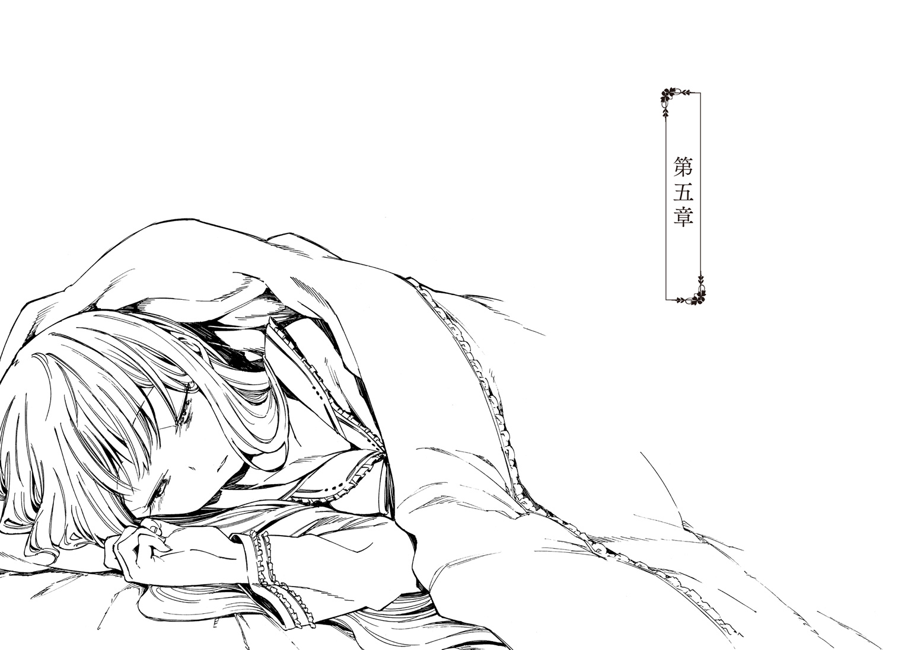
〝付き合う時間が長くなれば嫌でもわかってくるだろ〟
――という優樹の予想は当たっていた。
まだまだ理解が足りないとはいえ、この頃になると神鳴沢世界という転校生の素顔が見えてきたように思う。
たとえば長年にわたって引きこもっていた間。
彼女は屋敷の中でひとり、何をしていたのか？
延々とネットでもやっていたのか？ それともマンガやアニメにでもハマっていたのか？ あるいはいっそ、酒と葉巻におぼれる生活でも送っていたのか？
「いいやちがうよ」
世界は首を振った。
そしてつまらなそうに言った。
「何をしていたのかと訊かれればこう答えよう。寝ていたのだ」
「ははあ。寝てたと」
「そうだ。何もせずに寝ていた。一日中ベッドに寝転んで、時間が過ぎるのをじっと待っていた」
それから彼女はこう付け加えた。
「わたしはあまり身体が強くないから」
†
とはいえ一日中ずっと寝ていられるものではない。
空いた時間は何をしているのかといえば、読書にあてているのだという。
「いろいろな本を読むよ」
と世界は言う。
「あまり好き嫌いはないな。おチヨが用意してくれたものの中から、なんとなく目に付いたものを選んでいる」
本のうちわけを聞いてみると、図鑑、博物誌、歴史書、などが多かった。
それだけ聞くと、なんだかとても頭がよさそうに見える。
「そうだろう？ わたしは頭がいいのだ」
と言って彼女は胸を張った。
残念ながらそういう言動をするから頭が悪そうに見えるのだが、そこは口にしないのが人情というものだろう。
老成した雰囲気と、それとは正反対の子供っぽさ。
どちらの面も同居しているところが、神鳴沢世界の魅力なのだから。
†
いろいろな本を読むヤツは知識の幅が広い、と思われがちだが。神鳴沢世界に関してはその限りでない。
むしろ彼女の知識はとても偏っている。
たとえばカリブ海にあるマイナーな国の人口やら産業やらは知っているけど、国民の誰もが名前ぐらいは聞いたことのあるアイドルグループを知らなかったりする。
「変なことたくさん知ってるよなあ、神鳴沢って」
「うむ。わたしは頭がいいからな」
「でも肝心なことは何も知らないよな」
「仕方ないだろう？ わたしは引きこもりだったんだから」
「そんなんじゃ立派な女子高生になれんぞ」
「立派な女子高生になるためには」
世界は身を乗り出して、
「どうすればいい？ 教えてくれ」
「ひとことで言うのは無理だけどさ。たとえば女子高生ってやつはさ、休み時間になれば学校のトイレで化粧を直すもんだよな」
「そうなのか？ それは知らなかった」
「眉毛の描き方とか、ファンデの塗り方とか。そういうの知ってるヤツは、友だちを作りやすいだろうし、話もいろいろできるだろうな」
「なるほど。これはいいことを聞いた」
そうして翌日。
おチヨさんの手を借りずに自ら化粧をほどこした世界は、できそこないのなまはげみたいな姿を披露して爆笑される、というオチがつくのだった。
こういうのもまた、彼女の魅力のひとつに数えられると優樹は思う。
†
神鳴沢世界が不器用なのは手先だけではない。とにかくあらゆることが不器用だった。
猫舌でよく火傷をする。
何もないところで転ぶ。
ものを飲む時よくこぼす。
靴をひとりじゃはけない。
ふたつのことを同時にできない。
しゃべってる最中にしばしば舌を噛む。
「我が主のあれはある意味、才能ですから」
おチヨさんは『それが何か？』という顔で評したものである。
「不器用だからといって何ほどのことがあるでしょう。主人に足りないところがあれば、メイドがそれをフォローすればいいのです」
「そりゃまあそうかもしれませんけど」
「優樹様には何かご不満でも？」
「不満ってわけじゃないですが。神鳴沢が学校に通い始めたら、あいつの足りないところは誰がフォローするんです？」
「あら。今さらその答えが必要ですか？」
と言っておチヨさんはニッコリ笑った。
優樹もアハハと笑って返した。
ニッコリ。
アハハ。
ニッコリ。
アハハ。
笑顔のやり取りが何度も続き、おチヨさんの視線はずっと優樹に向けられたまま。
流れ的にはそれが自然なのかもと思いつつも、苦笑いは止められない優樹なのだった。
もっとも神鳴沢世界の不器用っぷりは、手先なんかよりも性格の方に強く表れていたのだが――それを知るのはもう少し先のことになる。
†
「ふーんそっかー。ついに来るんだ神鳴沢さん」
私立叢雲学園高等部、三年Ａ組の教室にて。
小岩井来海は宿題を広げながら感想を述べた。
「優樹くんの努力がむくわれたね。おめでとうおめでとう」
「ういーす。あざーっす」
放課後の教室には学級委員のふたりだけ。
すっかり日が長くなった教室はまだ明るく、チア部が練習する元気なかけ声が中庭からひびいてくる。
「たぶん明日には」
図書館で借りた本をめくりながら優樹は報告する。
「学校に連れてこれると思う。今はいろいろ準備をしてるところっぽい」
「準備って何の？」
「カツラとか帽子とかのだろ」
「ははあ。なるほど」
返事をしながらも、来海は数式を解くのにいそがしい。参考書とにらめっこしながら首っ引きでかじりついている。
「何にしてもいいことよね。うんうん」
「あいつが学校に来たらよろしくしてやってな、小岩井さん」
「そねー。できるだけねー。そうしたいけどねー」
かきかき。
かきかき。
ノートの空欄が数字と記号で埋められていく。
優樹はチア部のかけ声をＢＧＭに、ぺらぺら本をめくりながら、
「時間はかかると思うんだわ、たぶん間違いなく」
「神鳴沢さんが学校になじむのに？」
「そそ。でもまあ、ゆっくりやってくしかないよな。あいつの浮いてるっぷりは気合入ってるからな。簡単にはいかないよな」
「でもさー優樹くん」
髪をわしわし掻きながら来海。
「あんまゆっくりしてる余裕はないかもよ？」
「え？ なんで？」
「んー」
しばしの沈黙。
かりかりかりとノートに書き込む音がしばらく続いてから、
「そこはノーコメントってことにしときましょう」
「なんだそりゃ」
「なんていうかまー、いろいろあるってことですよー」
「よくわからんけど、言いにくそうにしてるのはわかる」
「わたしもねー、立場すっごい微妙なんだよねー」
ちょっとおどけた様子で来海は言った。
もったいぶった感じで。
「でもまあ、わたしは優樹くんの味方だから。そこは安心して？」
「お。うれしいこと言ってくれるね」
「そりゃあね。長い付き合いだし、助けてもらった借りもありますから」
「いやー。とっくにチャラだと思うけどなそれって。俺の方こそ小岩井さんにすっげー助けてもらってるしさ」
「そんなことないよ。あの時ケンカしたせいで優樹くんだいぶ誤解されちゃったし。今でもわたしぐらいしか友だちいないわけだし。正直それってわたしのせいだし」
「いやいや。小岩井さんのせいってことはないだろ」
「てゆーか強すぎなんだよね優樹くん。しかも手加減が下手くそなんだよね」
「そこはハイ、すんません。完全に俺が悪いです」
「なんにせよ優樹くんってさ。昔から人のこと放っておけないタイプだったよ」
ノートから顔を上げる。
窓の外に目を向けて懐かしそうに語る。
「優樹くんのそういうところ、すっごくいいと思う。それに格好いいとも思う。だから誤解もされやすいけど、ついてく人はついていくんだよね。わたしもそうだし、妹さんもそうだろうし」
「うれしいこと言ってくれるねぇ」
「でも浮いてるっていう意味では、優樹くんも神鳴沢さんといっしょだからね？ 優樹くんってわたし以外の人とはぜんぜん話さないし、仲良くもないんだからさ。そこは覚えとくよーに」
「............」
ぽりぽり頬をかく優樹。
天井を見上げ、来海といっしょに窓の外に視線を向けてから、
「なあ小岩井さん」
「なあに？」
「言おうかどうか迷ったんだけどさ。やっぱ言った方がいいかなと思って」
「長いつきあいでしょ、わたしと優樹くんは」
優樹に向き直り、姿勢を正して。
来海は神妙にうなずく。
「言って。なんでも。ちゃんと真面目に答えるから。誠心誠意」
「......了解。じゃあ言わせてもらうけど」
そこから少しためを作って。
優樹もまた姿勢を正し、神妙な顔を作ってから。
来海のノートを指さしてこう具申した。
「そこ、ＸじゃなくてＹじゃないかな」
「............」
来海が眉間にしわを寄せる。
それからノートに目を走らせ、何度も検討してから、
「優樹くん」
「なんでしょ」
「優樹くんのそういうところ、わたしちょっとキライです」
「言うと思った」
優樹はニマッと笑って、
「俺って誤解されやすいんだよな」
†
翌日。
優樹は宣言どおり、世界を連れて学校へやってきた。
時刻は午前十時を少し回ったところ。完全に遅刻である。
「まあ気にすんな」
誰もいない校門前に並んで立って。
優樹は初登校に成功した同級生をなぐさめる。
「ここまでたどり着いただけでもすげえ前進だ。ぜんぜんいけてる。だから泣かなくていいってマジで」
「ううう......」
泣き虫な同級生は早くもべそをかいていた。
「すまぬなあ優樹。わたしはいつもこんな感じで......ぐすっ」
「いやいや気にすんなって。ここまで自分の足で歩いて来れたんだからさ。だいぶ休み休みだったけど」
「初めから車で来るべきだったのだ、こんなに遅れてしまうぐらいなら。だけどわたしがわがままを言ったから......」
「いやいや。車で来ると変に目立ったりするかもだしさ。それにどうせなら自分の足で歩いて行きたい、って言ってたわけじゃん神鳴沢は。だからいいんだよ遅刻ぐらい」
「だけどそのせいで貴殿も遅刻を......」
「別にいいって遅刻するぐらい。気にすんなって」
「うう......」
なぐさめの効果もなく、ぽろぽろ涙をこぼす世界だった。
（こいつはこの先もこんな感じなのかねえ......）
さすがに心配になってくる。
黒髪ロングのウィッグの上にベレー帽をのせるという、意味があるのかどうかわからない二重の対策をして今日を迎えた彼女だけど。このままだとせっかくの気合も空回りしてしまいそうな気が。
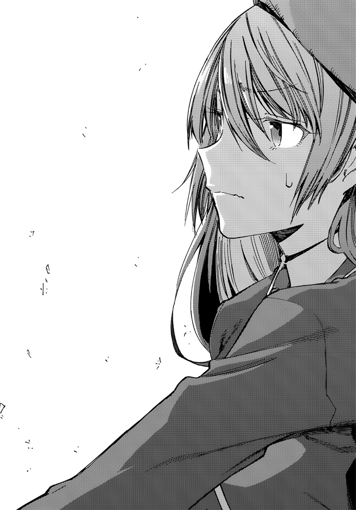
（まあでもいいか）
優樹は気持ちを切り替える。
（なんせ可愛いからなこいつは！）
そう。神鳴沢世界は可愛い。
黒髪もベレー帽も制服もひたすらよく似合っている。
人間、なんだかんだで大事なのは見た目である。その点をクリアしてる彼女が学校なりクラスなりで受け入れられる可能性は、決して低くないはずだ。
きっかけさえ掴めればなんとかなる。たぶん。
「そんじゃ行くか神鳴沢」
とん、と背中を叩きながらうながす。
「とにかく普通にしてりゃいいから普通に。変にやる気出さんでいいから。お前は黙ってりゃ可愛いんだから大丈夫だ」
「そ、そうか？ わたしは可愛いのか。そうか」
「ばっちり転校デビューを決めようとか、そういうのは考えなくていい。とりあえずマイナスさえなけりゃいいんだからな」
「うむわかった。余計なことは考えない」
「あと俺からのフォローはあまり期待するな」
「わかった。期待しない」
「よし」
うなずくと同時にチャイムが鳴る。
一時間目の授業が終わった合図だ。
授業合間の休憩時間。
廊下を歩く優樹と世界のコンビは、すでに浮いていた。
銀髪は隠しているし、普通に制服も着ている。特におかしな行動をしてるわけでもない。
にもかかわらず、神鳴沢世界という存在はとにかく目立つ。
好意的なものにせよ、その逆にせよ。視線を集めずにはいられない。そういうオーラを彼女は持っている。
「ぅぅ......」
そして彼女はすでに半泣きだった。
道行く途中（特に電車の中とか）でも同じ状況にさらされていたが。目指してきた地に身を置いているとあって、ますます涙腺が弱くなっているのだろう。
できるだけ好奇の視線から世界をかばうように歩きつつ、教室へ向かう。
三年Ａ組のドアをくぐると、真っ先に小岩井来海と目が合った。
「ちょっと優樹くーん？」
「おす。おはよ」
「おすおはよ、じゃないよ。思いっきり遅刻じゃん。しっかりしろー学級委員」
「ごめんごめん」
学級委員コンビのやり取りを、他のクラスメイトたちは黙って見守っている。
遠巻きにしている連中も、ついさっきまで来海と笑顔でおしゃべりしていたグループも。せいぜいあいまいな微笑を作るだけで会話に絡んでくることもなく、あいさつをしてくることさえなく。
これが桐島優樹のクラス内における立ち位置なのだ、といえばそれまでだけど。クラスメイトたちの中途半端さ加減には、今日は別の理由があった。
「や。ども。おはよ」
来海が世界に声をかける。
軽く手を挙げて、まずは様子見で、という感じで。
「お」
対する世界は、
「お、お、お、おは、おは」
真っ赤になって口ごもっていた。
うつむき、両手をもじもじさせて、
「......あう」
けっきょくは何も言えずじまい。
来海は『にこっ』と笑って軽く流し、友人たちとの会話に戻っていく。
同時、微妙だった空気がやわらいで、教室に談笑の雰囲気が戻ってきた。
（サンキュー小岩井さん）
心の中で礼を言う優樹。
触れつつも深入りせず。このあたりの立ち回りはさすがである。
おかげでさしあたり、のっけから世界が孤立してしまう流れは避けられた。第一段階はクリアと言っていいだろう。
「神鳴沢」
「う、うむ？」
「お前の席そこな。俺のとなり」
「う、うむ。わかったっ」
こくこくうなずいて。
世界はぎくしゃくした動きで示された席のそばに立つ。
それぞれに時間を過ごしながらも、クラスメイトたちがそれとなく注目している。
優樹も自分の席につき、世界の様子をうかがったのだが。
「............」
彼女は困り顔で突っ立っていた。
そのまましばし直立して途方に暮れて、
「うう......ここからどうすればいいのだ？」
涙目で優樹を見てきた。
そこからかよ！
と天を仰ぎつつ近づいて、
「ええとだな。とりあえず教科書とか持ってきてるだろ？ それを机の中に入れて」
「こ、こうか？」
「んで次の授業は古文だから。その教科書を机の上に出す」
「こ、これでいいのか？」
「あとは座って待つ。そのうち授業が始まるから」
「う、うむ。わかった」
世界は何度もうなずいて。
やたらと背筋をのばして待機する。
その顔は緊張まるだしで、見てる優樹の方がハラハラしてくる。
きーんこーんかーんこーん。
タイミングよくチャイムが鳴り、古文の教師が教室に入ってくる。
第一弾の授業は無事に終わった。
初老の担当教師は空気の読める男だったから、初顔の生徒をあえて指名することもなかったし、いっさい話題にすることもなかった。ありがたいことである。黒板に答えを書け、なんて指名されようものならぜったいトラブルになっただろう。
きーんこーんかーんこーん。
チャイムが鳴って古文の教師が教室を出、生徒たちがぞろぞろ立ち上がった。
次の授業は体育である。
「神鳴沢」
周りをうかがってきょろきょろしている世界へ、
「着替えまではついていってやれんから。なんとか上手くやってくれ」
「う、うむ。わかった」
「つーか体育の授業なんて受けられるのか？ 身体弱いよなお前？」
「できるだけがんばってみたい」
世界は決意のこもった声で、
「運動は無理だろうが、せっかくだから着替えるだけでも」
「了解。――つーわけで小岩井さん」
「ういうい」
「お願いできるかな？ 神鳴沢のこと」
「ほいさー。......そんじゃ神鳴沢さんこっちきて。更衣室まで連れてくから」
学級委員の背中についていく世界を、優樹はただ見守るしかない。
（まあだいじょうぶだろ）
自分も体育の準備をしながら優樹は思う。
（さっきの授業もとりあえずクリアできたし。あんまり心配しすぎてもあいつのためにならんしな）
そうしてわずか十分後。
優樹の耳に飛び込んできたのは、ぶっ倒れた神鳴沢世界が保健室に運ばれたという一報だった。
†
「......すまぬなあ優樹よ」
保健室のパイプベッドで横になって。
世界は眉をハの字にして謝った。
「大きな口を叩いておいて、けっきょくはこんなことになってしまった。面目ない」
「いやいや気にすんな」
むしろ優樹の方が謝りたいくらいだった。
病弱な転校生の限界がどこにあるのか見極められなかった自分のミスだ――と考えるのは間違っているだろうか？
それに来海から聞いたところによると、世界は更衣室で、特に前触れもなくあっさり倒れたという。前もって予測するのは難しかっただろう。
「ちょっと厳しいよなあ」
頭を掻きながら優樹はボヤく。
「これじゃあ普通に学校生活を送るのは無理があるよな。やっぱお前を学校に連れてくるのはマズったかなー」
「そんなことはないぞ優樹よ」
世界は首を振って、
「自分の身体がどういう状態なのか、わたしはわかっているつもりだ。その上で普通に学校に通いたいと言っていて、そのワガママに貴殿は付き合ってくれている」
「うーん。つってもなー......」
「それにわたしは楽しいぞ？」
はにかんで、
「学校に来て、みんなといっしょに授業を受けて。とても充実した気持ちだ。これもすべて優樹のおかげだよ。貴殿が助けてくれたから、わたしはここに居られる」
「そっか。そう言ってくれるとありがたいな」
「新しい発見もたくさんあったよ」
「発見？」
「貴殿は、クラスのみんなとあまり仲良くできていないのだな」
「............」
「貴殿と会話を交わしていたのはひとりだけだった。他の者たちはみな、貴殿を苦手にしているように見えた」
心配そうな顔をする世界。
お前に心配されるのも何だかな、と苦笑しながら優樹は説明する。
「まあなんつーか。いろいろあるんだよ」
「いろいろとは？」
「まず第一に、俺の家ってけっこうでっかい会社をやってるんだな。これだけでもまあ、いろんなところで浮く」
「他には？」
「ついつい人を殴っちまうことが、何度かあってさ」
「貴殿は人を殴るのが好きなのか？」
「んなわけねー。たまたまそういう場面に出くわすことがあったんだよ。それでまあなんつーか、誤解されちまった的な」
「誤解を解かなくていいのか？」
「解けるものなら解きたいけどな。一度レッテルを貼られちまうと難しいんだよな。俺、あんま目つきとかもよくないし」
「......そうか」
ため息をつき、しかめっ面をする世界。
「世の中むつかしいのだな。わたしが想像している以上に」
その顔はまるで、世の中の矛盾に生まれて初めて突き当たった子供みたいで。なんだか妙におかしい。
「まあ俺のことはどうでもよくてだな」
話の流れを戻して、
「今日はどうする？ とりあえず家に帰っとくか？」
「......できればもう少し長く学校にいたいのだが」
「別に今日じゃなくてもいいだろ？ 学校にちゃんと通うつもりがあるんなら、明日も明後日も学校に来るんだからさ」
「ふむ」
しばらく考えてから世界はうなずき、
「わかった。貴殿の言うことを聞く。今日はおとなしく休むとしよう」
そんなこんなで。
神鳴沢世界の二度目の登校は、二時間目の途中でリタイアとなった。
悲観することはないと優樹は思う。
むしろ格段の進歩だろう。だいぶ手は掛かったものの、この段階まで来ればこっちのものだ。もしまた引きこもりに戻ってしまっても復帰の手順はなんとなく見える。行きたくないとぐずっても勝算は思いつく。
もちろんただ学校に来るだけじゃダメだ。
ちゃんと授業を受けて、学校行事に参加して、クラスメイトたちと打ち解けて。それでようやく世界は前進できる。本当の意味で。
（......って、人のこと言ってる場合じゃないよな）
そこまで考えて優樹は失笑した。
今の自分の立場で何が言えるのか、という話である。
（俺もちょっとは変わっていかないと......か）
小岩井来海がいて、妹の春子がいて。優樹の人間関係は十分に賑やかで、満足もしているけど。〝師匠〟の立場としては〝弟子〟にみっともないところは見せられないから。
†
翌朝。
登校すると上履きがなくなっていた。
優樹のではない。神鳴沢世界のである。
（マジか......）
何度も目を疑った。
疑うだけじゃなく何度も目をこすった。
だけど現実は変わらない。ほとんど新品だった真っ白い上履きは、影も形もなく消えてしまっている。
（誰かが間違えて持っていった――？）
ということもなさそうだ。
世界の上下左右のスペースはすべて空っぽになっている。うっかりミスでどこかのおっちょこちょいが履いていったとすれば、余っている上履きが残っているはず。
（神鳴沢の方が間違えた？ 別のスペースに上履きを入れちまったとか――）
それも考えづらい。
彼女はいま、優樹のとなりにいて、優樹と同じ方向に視線をやり、ポカンとしている。状況を理解して、その上で呆然としているのが見て取れる。
となれば答えはひとつしかない。
誰かが持ち去ったのだ。世界の上履きを。意図的に。
（なんでだ？）
優樹はくちびるを噛む。
こんな仕打ちを受ける理由はないはずだ。彼女は何もしていない。久しぶりに学校に来て授業を受けようとして、途中で体調を悪くして家に帰った、ただそれだけ。恨まれるようなことは何もないはず。
なのに何故？
せっかく学校に来れるようになったのに。
これじゃあまた引きこもりに戻って――
「あーっと。えーとな神鳴沢」
キレそうになってる場合じゃない。
神鳴沢世界は繊細なヤツだ。
駅までの道のりが長いと言っては泣き、通勤ラッシュの電車ですし詰めになっては泣き、コンビニの缶コーヒーを飲んでは泣くようなヤツだ。
ここは何としてもフォローしなければ。
上履きを隠すという、半笑いするほど古典的で工夫のない嫌がらせでも、世界にはてきめんに効いてしまう。
「とりあえず落ち着け。心配すんな。これはたぶん何かの間違」
「優樹」
固まっていた世界が不意に声を上げた。
その小さな声はしかし、妙に人を引きつけるものがあって。周りにいた生徒たちが何人も振り返る。優樹も心拍数をあげながら振り返る。
そうして彼が見たものは。
くしゃくしゃに顔をゆがませ、ぼろぼろ涙をこぼしている神鳴沢世界の姿――
ではなかった。
「優樹っ」
笑っていた。
神鳴沢世界は笑っていた。
決して無理に作った表情ではない。
それどころか彼女は目を輝かせて、
「わたしは今、とても感動している」
と言った。
優樹は「......はい？」という顔をした。
「感動したのだよ優樹、わたしは。心を動かされたのだとても」
同じ意味のことをくりかえす世界。
だけど優樹はやっぱり「......なんで？」と首をかしげるしかなく。
世界は物わかりの悪い生徒をじれったがる教師みたいに、身振り手振りを交えて、
「見よ優樹。わたしの上履きがない」
「お、おう。らしいな」
「誰かがわたしの上履きを隠したのだ」
「まあ。そうかもな」
「つまりこれは、いわゆるいじめだ」
「いや、まだそうと決まったわけじゃないから。だから落ち込まなくていい――」
「わたしはとてもうれしい」
......やっぱり意味がわからない。
１＋１＝３だと真顔で答えられているような。
地動説を信じて疑わなかったのに、真実は天動説だと諭されているような。
「えーっとだな神鳴沢」
優樹はおずおず聞いてみた。
「もしかしてひょっとして、お前がいじめられてるとして。なんでそれがうれしいんだ？ いじめられてるってことは、お前は誰かから嫌われてるってことだろ？ それもけっこうな感じで嫌われてるわけだろ？ うれしくないだろ普通は」
「そんなの決まっているではないか」
むしろ不思議そうな顔さえして。
世界はこう教えてくれた。
「なんだか〝生きてる〟って感じがするからだ」
「はあ」
「わたしが学校に来て、それを気に入らない誰かがいた。結果として上履きがなくなった。わたしとその誰かが関わったという事実が、具体的な形になって目の前に現れているんだ。これがうれしくなくて何だというのだ？」
「ははあ」
まったく想像しない角度から飛んできた変化球。
優樹にとってはそんな感じの発言だったけど。世界のほんとうにうれしそうな顔を見ると、それはそれでアリなのかとも思えてきた。
「まあそうか。お前って引きこもりだったもんな。かなりマジな感じの」
「うむ。そうなのだ」
「そこから考えると――そうか、なるほどなあ。そういう考え方になったりもするのか」
「うむ。そういうことなのだ」
「だけどさお前」
優樹はジト目で指摘する。
「上履きなしで今日一日どうすんだ。足の裏が汚れるし、それに痛いだろうし」
「汚れるくらいは構わない。痛いのだってがまんできる」
「ひとりだけ裸足なのはけっこう浮くぜ？ それにいじめられてることもバレるぜ？ バレたらクラスのやつらと仲良くできんぞ？」
「ぜんぜん構わない。『仲良くできない』というのもまた、人と人との関わり合いの形だ。引きこもりのわたしにはうれしいことだ」
にへへ、でへへ。
世界はうれしそうに笑っている。笑っているというかニヤけている。
（本気で言ってる――んだろうなあ、これって。やっぱ）
おどろきだった。
まさかこの状況を、こんな風に受け取るヤツがいるなんて。
「えーと。じゃあどうする？」
「どうするとは？」
「今日はこのまま家に帰ってもいいんじゃね？ こういうことがあったんだからさ、先生に報告したりとか。いろいろ手を打っておいた方がいいんじゃないか、っていう」
「その必要はない」
世界は強く首を振った。
「そんなことをわたしは望まない。今のままでわたしはいい」
「いやでも――」
「さあ行こう優樹。ぐだぐだしていると遅刻してしまうぞ？」
そう言って、彼女は上履きなしで廊下を進んでゆくのだった。意気揚々と。
結果、世界は三時間目の途中で早退した。
原因はいつもと同じ体調不良だった。上履きの件は関係ない。保健室のベッドに寝そべってレフェリーストップの声を聞く彼女はとても残念そうで、強がったり無理をしてるようにはぜんぜん見えないのだった。
（変なやつだ）
優樹はあらためてそう思った。
世界と関わっていると、世の中のことがいろんな切り口で見えてくる気がする。
彼女の魅力は、何よりもそういうところに表れているのかもしれない。
第六章
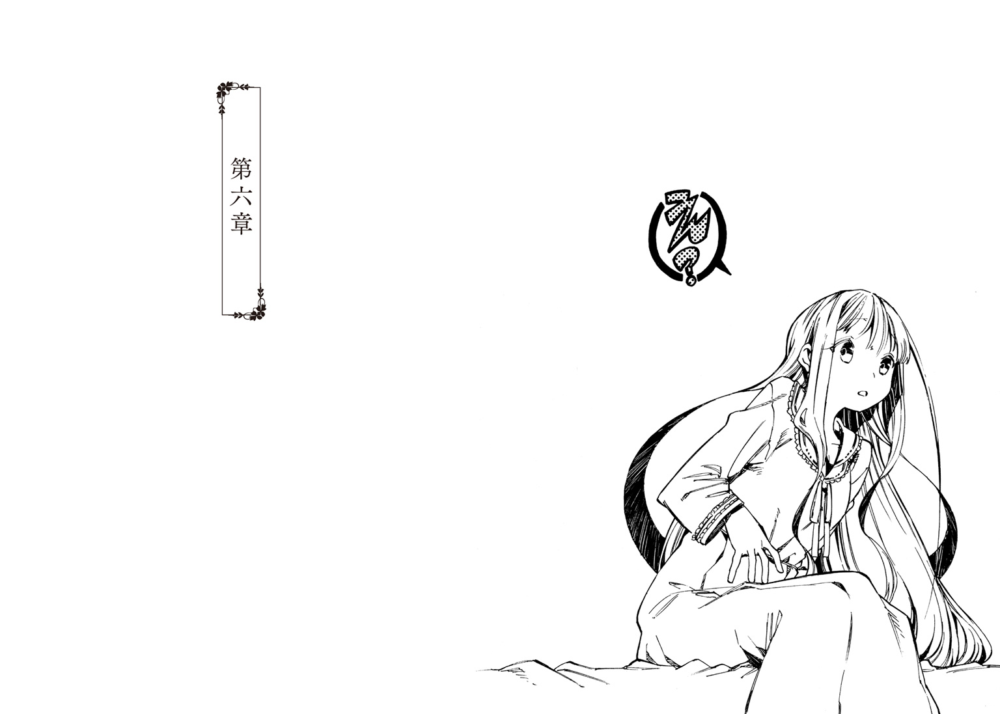
その後、神鳴沢世界に対する嫌がらせは一時、収まった。
問題が解決したからではない。立て続けの無理がよくなかったのか、彼女が本格的に体調を崩してしまい、学校に来れなくなってしまったからだ。
居ない人間には嫌がらせもできない。
五月の終わりから六月にかけての間、のんべんだらりと状況が過ぎた。たまに神鳴沢家をお見舞いするし、世界もよろこんではくれるけど、体調の悪い相手をそうそう邪魔するわけにはいかない。上履き隠しの犯人も探してみたものの、確乎たる証拠は何もつかめないままだ。
春子とじゃれ合い、来海と放課後を過ごし、じめじめした雨がいつまでたっても止まない日々がつづいて――そうしてふいに晴れ間がのぞいたとある日。
何日かぶりに神鳴沢家を訪れた優樹に、メイドのおチヨさんがこう言ったのである。
†
「我が主とデートしていただけませんか」
部屋には世界と、優樹と、おチヨさんがいた。
「ういっす。了解っす」
優樹はすぐにうなずいて、
「いつがいいですか？」
「我が主は近ごろいくぶん体調がよろしゅうございますので。なんでしたら今日これからすぐにでもいかがでしょう」
「いきなりっすね。でもはい、いいっすよ全然」
「デートコースはどのようにいたしましょう？ 差し支えなければわたしの方で用意いたしますが。お店の予約ですとか」
「いや、だいじょうぶっす。何か考えます。神鳴沢といっしょに」
「かしこまりました。――というわけで我が主」
笑顔を向けて、
「段取りが整いましたので。どうぞ行ってらっしゃいませ」
「............」
世界はポカンとしていた。
寝間着を着て、ベッドから半身を起こして、読みかけの本を開いたまま。いったい何が起きているのかわからない、という顔で。
「......いや。ん？ え？」
眉間を指でもみほぐしながら、
「なあおチヨ」
「何でございましょう」
「わたしの勘違いでなければだ。わたしのまったくあずかり知らぬところで、わたしの大事な未来が決められてしまったようなのだが。気のせいだろうか？」
「はい。お気のせいでございますよ」
にこりと微笑んだ。
「ふむふむ。そうかそうか」
世界もまた微笑み返して、
「状況を確認するとだな。わたしがまったく口を挟まない状況で、おチヨと優樹が会話を交わして、わたしと優樹がデートすることになった――その解釈で間違いないか？」
「はい。間違いございません」
「わたしの勘違いでなければだ。わたしのまったくあずかり知らぬところで、わたしの大事な未来が決められてしまったようなのだが。気のせいだろうか？」
「はい。お気のせいでございますよ」
「ふむふむ。そうかそうか。気のせいか」
何度もうなずき、読みかけの本に戻ろうとして、
「――って、そんなわけあるかー！」
掛け布団ごと本をひっくり返した。
「ぜったいおかしい！ 気のせいなんかじゃない！ わたしはだまされている！」
「落ち着いてくださいませ我が主」
「これが落ち着いていられるか！」
顔を赤くし、両手をぶんぶん振って抗議する世界。
一方おチヨさんは冷静に、
「すると我が主はお嫌だとおっしゃるのですね。こうしてヒマを見つけては様子を見に来てくださる優樹様とデートするのが」
「そ、そういうわけではない！」
「我が主にとってほとんど唯ひとり、親しい間柄といえる優樹様は、デートするに値しない相手だと。そうおっしゃるのですね」
「だからそういうわけではないと――」
「申し訳ございません優樹様」
優樹に向き直って深々と頭を下げるおチヨさん。
「我が主が嫌だとおっしゃいますので。今回の話はなかったことに」
「うーんそっすか。しょうがないっすね」
「こちらから話を振っておきながらこの有様、まことに申し訳なく。どのようなお叱りも甘んじてお受けします」
「いやいや。フラれたこっちが悪いんですから。俺って目つきも悪いし、すぐ揉めごと起こすし、ろくな男じゃないっすからね。むしろフラれて当然でしょう」
「そこでもしよろしければ、ですが。わたしの方から手頃な女性をみつくろって、ご紹介させていただくわけには参りませんでしょうか。お詫び代わりに」
「え。いいんすか？」
「もちろんですとも。十人でも百人でも紹介いたします。合コンの形にも一対一の形にもできます。お望みでしたら今すぐにでも手配を――」
「だーかーらーッ！」
世界が悲鳴を上げた。
すでに半泣きである。
「わたしの話を聞け！ 嫌だとは言ってない！ する！ デートする！」
「いえいえ我が主。どうかご無理をなさらず」
「無理などしていない！ よろこんでする！ 今すぐする！ 準備をするから少し時間をもらいたい！」
†
「......それにしてもおチヨさん」
世界の部屋を出て、屋敷の応接間でくつろぎながら。
澄ました顔でお茶をすするメイドさんへ、優樹は皮肉の針を刺す。
「いきなり剛速球をブン投げてきましたよね」
「と、いいますと？」
「もちろんわかってるつもりですよ俺は。あいつは可愛いです。神鳴沢世界はとにかく可愛いですよね。シャレにならんくらい可愛い」
「はい。その通りです」
「見た目も可愛いし、仕草も可愛いし、考えてることも可愛い。可愛いものだけで構成されている可愛いモンスターです。なんなら結婚したいと思うぐらいです」
「優樹様はよくわかっておいでで」
「でもですね」
眉をハの字にして、
「いきなりデートしろとか言われますと。さすがに心臓が止まるかと思いました」
「そのわりには」
ティーカップをテーブルに置き、にっこり微笑んで、
「優樹様はすぐにオーケーなさっておりましたが」
「そりゃね。あそこで口ごもるわけにはいかんでしょ男として」
「よい気構えをお持ちです」
「でもまあ実際には頭の中真っ白だったんで。ああいうサプライズをやる時は、今度から事前に言っといてください。マジで」
「申し訳ございませんが」
小首をかしげ、人差し指をほっぺにやりながら、
「ご要望にお応えすることはできません。わたしはひねくれた性格をしておりますので、今後ともこのような形でサプライズを企んでいきたいと存じます。そして我が主の可愛らしい姿をこれからも堪能していきます」
「ははあ。そですか」
「むしろしゃぶりつくします。骨の髄まで」
「ははあ」
笑うしかない優樹だった。
ここまでぬけぬけと言われてしまっては、という感じである。
「万一の場合にそなえて」
おチヨさんはお茶のお代わりをいれながら、
「デートの最中は常に様子をうかがっておりますので。気兼ねなくお遊びいただき、我が主を楽しませてくださいませ。また何かお困りの際は、いつでも連絡をいただきますよう。すぐに駆けつけますから」
「至れり尽くせりで恐縮です」
優樹は深く頭を下げた。
もちろん皮肉のつもりで。
「それで」
と優樹、
「いったい何をさせたいんです」
「といいますと？」
「俺と神鳴沢をデートさせて何になるのか、ってことです。どんな結果になればおチヨさんは満足ですか？」
「なにか勘違いをされているようですが」
紅茶の香りを楽しみながら、
「わたしは別に悪巧みをしているわけではありませんよ。わたしが欲しているものはとてもシンプルで、そして永久不変のものです。今も昔もずっと同じものを求め続けているのです」
「いったい何を？」
「我が主の幸せです」
梅雨の晴れ間の穏やかな日だった。
庭の木々は雨をたっぷり吸って緑あざやか。雲の隙間から差す陽光を受けて、あじさいの紫が目にまぶしい。
「ご存じのとおり、我が主はとても魅力的な方です。素直で、心が清らかで、なによりとても美しい。そんなお方にわたしは、できるだけいい思いをしていただきたい」
金紅色の液体に視線を落とし、
「わたしの望みはそれだけです。他には何も要りません」
†
世界は学校の制服を着て登場した。
斜め上の発想、とは言うまい。あれこれ悩んで思考が何周もしたあげく、こういうファッションに行き着いたのは想像がつく。
「ど、どうだろうか......？」
不安げな顔で彼女は訊いてきた。
正直に言えばどうだも何もないのだが、そこは優樹だって男である。笑ってちゃんとこう答えた。
「おう。似合ってるよ」
「そ、そうか？ うむ。ならばいい。うむ」
「体調はどうだ？」
「悪くない。むしろ今この瞬間はとても気分がいい」
「調子が悪くなったら言えよ？ 無理はすんな」
「うむ。無理はしない」
「ホントに無理すんなよ？ 約束だぞ？」
「心配はいらない。自慢ではないが、わたしは学校へ行けば必ず午前中には早退しているだろう？」
その通りだった。
優樹は笑って、
「そんじゃまあ行こうか。とりあえず」
「うむ。行こう」
「でもって歩きながら考えようぜ。どこに行くのかとか、何をするのかとか」
「うむ。そうしよう」
神鳴沢の邸宅は総武線沿い、都内きっての閑静な住宅街の中にある。
高級住宅地として知られるこの近辺は、坂が多く道が曲がりくねっている。世界にとってしんどい道のりのはずだが、彼女は駅までの道のりを淡々と歩く。
むしろ楽しそうに歩く。
坂や階段に差し掛かるとすぐに呼吸は乱れるが。それでも表情は明るい。
「で」
優樹は訊いた。
「どこに行きたい？」
「どこでもいいぞっ」
即答された。
どこでもいい、というのはある意味もっとも厄介である。
どうしたものか、と優樹は考えて、
「そんじゃまあ......公園でも行くか？ とりあえず。近いし」
「うむっ。問題ないっ」
にこにこ世界はうなずいた。
相手次第では怒って帰られそうな適当プランだが、彼女的にはぜんぜんアリらしい。
「もうちょっと贅沢なプランでもいいぞ？ どっかのお高いレストランとか」
「お金をかければ贅沢というわけでもないだろう」
「そりゃそうだけど」
「むしろわたしの方が訊きたいのだが」
優樹の少しだけ後ろを歩きながら、世界は遠慮がちに、
「わたしとデートしてくれるのはありがたいのだが......いいのだろうか」
「いいのだろうかって、何が？」
「たとえば貴殿の妹御が機嫌を悪くしないだろうか」
「春子か？ そりゃまあへそを曲げるだろうけど。でもいつものことだし」
「途中で体調が悪くなって、迷惑をかけてしまうかもしれない」
「今さら気にしねーよそんなこと」
「もしかすると、たくさんお金を使わせてしまうのではないか？」
「お金なら好きなだけ使ってくれ、っておチヨさんが渡してくれたよ。つーか俺だって少しぐらい持ってるよ。デートに使うぐらいのお金は」
「それに優樹は」
ちいさな声だった。
そよ風が吹いただけでも消えてしまいそうな。
「わたしでいいのか？ わたしとデートして楽しんでもらえるのか？ というかデートというものは、とても親しい間柄の相手とするものではないのか？」
桐島優樹は男の端くれである。
なので、こういう時の答えはちゃんと心得ていた。
「楽しいぞ」
うん、と力強く首を縦にふる。
「お前とデートできて俺は楽しい」
「............」
シンプルな答えだった。
むしろシンプルすぎて面食らってしまったらしい。世界は猫だましでも食らったみたいな顔をして、
「そうか。ふむ。そうか」
と言った。
それから急に彼女は顔を赤くした。
優樹は気づかないふりをする。これもまた、男子たる者のマナーであろう。
品のいい住宅街だけあって、公園はいい雰囲気だった。
ブランコなどの遊具も錆びたところがなく、全体的に清潔ですっきりしている。心なしか、遊んでいる子供たちも活き活きと輝いてみえる。
ふたりはベンチに腰掛けた。
「ふう」
世界がホッと一息つく。短い道のりとはいえ、彼女にしてみればちょっとした冒険だ。
「......しかし我ながら」
優樹はうす曇りの空を見上げながら、
「デートするってのに近所の公園とか。ちょっと情けなくなってきたな」
「なぜだ？ ぜんぜん情けなくないだろう」
不思議そうな顔をする世界。
「デートの行き先が公園だからといって、デートの善し悪しには関係ないではないか。わたしが楽しんでいること、それ以外にデートの価値を計る物差しはないであろう？」
「まあな。そうなんだけどな。理屈としてはな」
「お金の問題ではない、という話もさっきした」
「はい。仰るとおりで」
「むしろ情けないのはわたしの方だ」
しゅん、と世界は頭を垂れて、
「わたしの身体が弱いために、デートの行き先もこういう場所しかない。もう少し健康な身体であれば、貴殿に余計な気を遣わせることもなかっただろうに」
「いやいや。お前のせいじゃないって」
「ふむ。であればいいのだが」
「つーか俺の方もなー。いきなりデートってことになって、オーケーもしたけどさ。その先の考えがなさすぎてなー」
「ではお互い様だな！」
世界はこぼれるように笑った。
「わたしも貴殿も、お互いに迷惑をかけ合っているのだ。であればチャラというものだろう？ 気にすることは何もない」
「そっか。いや、だったらいいんだけどなホントに」
「本当に問題ないのだぞ優樹。わたしは心から楽しんでいるのだ。そしてとても新鮮な気分でいるのだ。こんな気持ちを味わわせてくれたのだから、むしろ貴殿には堂々と胸を張ってほしいぞ」
「......そっか。いやそうだよな。俺がテンション低い顔してたら、せっかくのデートが雰囲気悪くなっちまうもんな」
「そういうことだ」
と言って世界は白い歯を見せた。
それからこうも言った。
「わたしは公園に来るのも初めてだから、本当に楽しんでいるのだよ。その点は何度でも念を押しておくよ」
「............」
優樹は頬をかいた。
照れくさいからではない。
これまで訊こうとしてなかなか訊けなかったことを、この流れに乗って訊いてみようとしたのである。
「なあ神鳴沢」
「うむ？」
「公園に来るのも初めてって、お前いったいどんな生活してたんだ？」
「引きこもりをしていたよ」
恥じ入った様子で世界は答える。
「貴殿も知ってのとおりだ。わたしは身体が弱くて、ずっとベッドで寝転びながら人生を過ごしてきた。だから公園にも行ったことがない」
「つってもさ。お前って外の世界と関わりを持つのが嫌で、それで引きこもりになったわけじゃないよな？ 学校にだってちゃんと通おうとしてるわけだし」
「それはまあそうだが」
「だったら公園ぐらいはいつだって行けたはずだよな？ こんな近所の公園ぐらいだったら、車いすでも使えばすぐに来れるだろうし。お前っていちおう歩いて学校行けるぐらいの体力はあるんだからさ」
「それはあれだ優樹」
にこにこしながら、
「貴殿がわたしを変えたのだ。貴殿と出会って、わたしは外の世界をたくさん見てみたくなったのだ。だから貴殿には本当に感謝している。今のわたしがあるのはぜんぶ貴殿のおかげなのだ」
「そりゃどうも。なんかうれしいな」
本心である。
だけど世界のストレートな褒め言葉に、優樹は頬を赤くしたりしない。
さらに疑問を突き詰めていく。
「お前さ。小学校はどこに行ってた？」
「？ なぜそんなことを訊く？」
「そりゃ気になるからだよ。ひょっとしたら、友だちの友だちに知り合いがいたりするかもだしさ」
「ふむそうか。わたしはな、このあたりではない遠い場所の小学校に通っていたよ。名前はもう忘れてしまった。何しろほとんど学校に行かなかったから」
「じゃあ中学はどこに？」
「それも同じだ。遠い場所の中学校で、名前は忘れてしまった。なんならおチヨに訊いてみてもよいが？」
「いや。訊かなくていい」
優樹は首をふる。
あのメイドからまともな答えが返ってくるとは思えない。
「じゃあさ、なんか思い出話とか聞かせてくれよ」
「それは難しい質問だ。なにしろ貴殿ぐらいのものだからな、わたしにとって親しい間柄の人間というのは。思い出話など出てはこないよ」
「何かあるだろそれでも。少しぐらいは」
「うーむ。そう言われてもな......」
「学校に行ってなくてもさ、学校に関係する思い出とかはあるだろ？ 何でもいいんだ。たとえば学校へ行く途中で見た風景の話とかさ。たまにしか学校に行かなかったんなら、けっこう印象に残ってるんじゃないの？」
「ああなるほど。そういうことでいいのか」
理解した、という顔で安心したように、
「たまに学校へ行く時はだな、車に乗っていったのだ。なにしろ身体が弱かったからな。なのでわたしの覚えている風景といえば、車の外を流れていく景色ばかりで――うん、やっぱりあまり印象には残ってないのだよ。何度も言うが学校にあまり行ってなかったから」
「じゃあ学校のことを訊くのはやめる。ほかのことを訊かせてくれ。たとえば――」
「待て待て優樹」
世界は泡を食った様子で、
「そんな一気に訊かれても頭がこんがらがってしまう。貴殿はせっかちな男だ」
「そか？ んなつもりはないんだけど」
「それと素朴な疑問なのだが。デートというのはこういうものなのか？ わたしが想像しているものとはちょっと違うようなのだが」
「まあ......そうだな。確かに」
「それにだな、さっきから貴殿ばかり質問してくるのは一方的ではないか。わたしだって貴殿の話をいろいろ聞きたいのだぞ？」
くちびるを尖らせる世界。
優樹は白旗を揚げた。
「わかったわかった。じゃあ次はお前の順番な。なんでも好きなこと訊いてくれ」
「うむっ、そうこなくてはな。まずわたしが訊きたいのは、貴殿と貴殿の妹御の関係なのだが――」
そこから質問攻めが始まった。
世界は好奇心の大爆発となって、それはそれはいろんなことを訊いてきた。優樹の人生観、交友関係、趣味、女性の好み、果てはスリーサイズに至るまで。
あらゆる角度から、あらゆる密度で。
（ま、うれしいけどな）
神鳴沢世界が自分に興味を持ってくれること。
それは純粋に喜ばしく。優樹の心を弾ませる。
でもそれと同時に確信してしまうのだ。彼女と接している時にいつも感じている不安が的中してしまうのではないかと。心配になってしまうのだ。
「なあ神鳴沢」
質問の雨あられをさえぎって、優樹は言う。
「なんかあったら言えよ。ちゃんと」
「？ なんの話だ？」
「なんの話でもいい。とにかく何かあったら俺に言ってくれよな。できるだけのことはするからさ。いやマジで」
「ふむ。貴殿は妙なことを言う男だな」
首をかしげながらも世界はうなずいて、
「でもわかった。貴殿の忠告は覚えておく」
それからこうも言った。
「それともうひとつわかった。貴殿はきっと優しい男なのだろうな。優しくて、大きな男なのだろう。名前のとおりに」
「......ええと」
「どうした優樹？ 変な顔をして」
「そういうことを真顔で言われるとだな。わりとけっこう恥ずかしいんだが」
「何を恥ずかしがることがある？ わたしは本当のことを言っているだけなのに」
ムキになる世界だった。
世間知らずゆえだろうか。彼女は時々こういうところがある。
「さてと」
照れ隠しに話題を変えることにした。
「そんじゃまあ、ちょっとはデートらしいことをしてみっかな」
「むむ？」
すぐに世界が食いついてくる。
「デートらしいこと、とはどういう意味だ？ もっとデートらしいことがあるというのか？ わたしはもう十分にデートらしいことをしていると思うのだが」
「まあ見てろって」
もったいぶりながら腰を上げた。
この季節、あじさいの青と赤が鮮やかである。
木々の下生えの間には、シロツメクサの白い花も咲いている。
それらの花を少しばかりいただいて、優樹は作業を始めた。
「むむむ？」
世界が手元をのぞき込んでくる。好奇心いっぱいの顔で、まるで子供みたいだ。
とか思っていたら実際に子供たちもやってきた。遊んでいたちびっこどもが『なんだなんだ』とばかりに集まってきて、優樹の作業に注目する。
「なになにー？」
「なにしてんのー？」
「花でなにすんのお兄ちゃんー？」
「なあ優樹よ。もったいぶらずに教えてくれ。なにを作っているのだ？」
「ふっふっふ」
優樹はもったいぶって作業を続ける。
それからしばし時間が経って。
作品が完成した。
『おおおー！』と声があがる。
優樹が作ったのは花輪だった。シロツメクサの白と緑をベースに、あじさいの青と赤を散らした、なかなかの力作だ。
「――いい！」
目を輝かせて世界が賞賛する。
「これはいいな優樹！ とてもいいものだ！」
「だな。俺も満足の出来映えだよ」
「あじさいの青と赤が、まるでサファイヤとルビーみたいだ！ 優樹は手先が器用なのだな！」
「妹からせがまれてなー。前に何度も作らされたんだよな」
その経験がこんな形で生きるとは思わなかった。ただでさえ妹には世話になりっぱなしで頭が上がらないのだが、そのうちどこかで恩返しをしなけりゃと思う。
「うわー。うわー。すごいな。うわー」
世界はすっかり花輪のとりこになっていた。その姿はまるで、ショーウインドウ越しにトランペットを眺める少年みたいだ。
「気に入った？」
「うむ！ 気に入った！ すばらしいものを見せてもらった！」
「んじゃあげるよ」
と言って、優樹は花輪を世界の頭にのせた。
「............？」
世界はきょとんとしている。
ちびっこたちから『いいなー！』という声があがる。
「？ ？ 優樹？」
「いやだから。あげるって。つーかお前のだってそれ」
「？？？」
「お前のために作ったのそれは。もとからお前にあげるつもりだったの。気に入ってもらえるかどうかわからんかったけど、気に入ってくれたよなたぶん。だからあげる」
「............」
「プレゼントだよ。これでちょっとはデートっぽいだろ？」
「............」
まだ状況がわかってないみたいだった。
頭にのっけられた花輪に何度も触れ、ちびっこたちから『いいなー！』と言われて服の裾をつかまれ、そこからようやく顔が赤くなって、
「あ、あ、あ、あり、あり、ありが」
「ねえぼくのも！」
世界の小声をさえぎって、ちびっこのひとりが叫んだ。
「ぼくのもつくって！」
「おれのも！」
「あたしのも！」
「じゃあわたしも！」
「そんなに作ったら花がなくなっちまうよ」
チビどもにたくさんまとわりつかれて、優樹は困り顔をする。
大きいのは無理だけど小さいのなら、と提案すると、チビどもはよろこんで手を挙げた。
「んじゃそういうことで」
まだ呆けているお姫さまへ、
「手伝ってくれるか神鳴沢？ ひとりじゃちょっと無理だこの数は」
そんなわけで。
花輪づくり教室が公園の片隅で始まった。
世界が花を集め、優樹がせっせと花輪をこしらえる。子供たちがふたりを囲んでキャッキャとはしゃぐ。
しまいには子供たちの親御さんたちも集まってきて、ちょっとした騒ぎになってきた。
子供たちばかりでなく親御さんたちからも『作り方教えてもらえない？』なんて言われ、すっかり文化教室の体である。
優樹は泡を食い、世界は目を回した。
大忙しで、休むヒマもなくて、だけど優樹はまんざらでもない気分だった。なぜなら世界もまた、まんざらでもない顔をしていたから。
しまいには『なんだかおふたりさん、子だくさんの夫婦みたいね』なんて冷やかされ、優樹がしれっとした顔で『お似合いですかね俺たち？』と応え、世界は軽くパニックになってしまう一幕もあったけど。総じてデートは大成功だったと言えるだろう。
「おやりになりますね優樹様」
と後でおチヨさんもほめてくれた。
屋敷に戻った世界は体調をくずして寝込んでしまって、その点だけはミスになってしまったけど。子供たちと活き活きした表情でコミュニケーションを取っていた彼女のことを思えば、胸を張っていいはずである。
そして優樹は思うのだ。
あとになって考えてみれば、この時がいちばん幸せな時期だったかもしれないと。
第七章
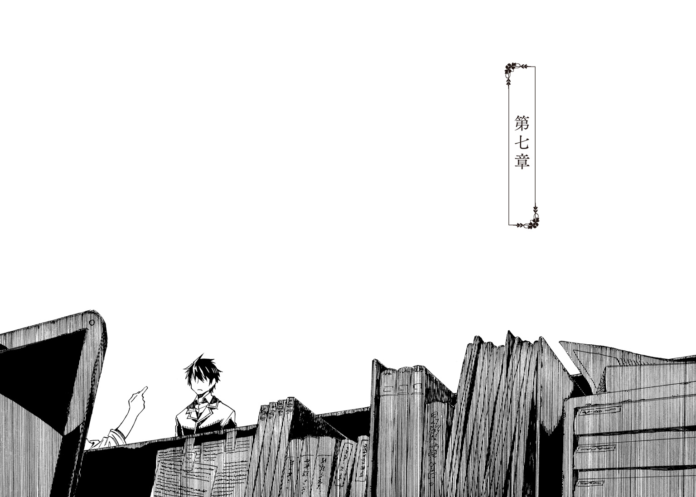
神鳴沢世界がふたたび学校へ通えるようになるには、七月を待たねばならなかった。
本来なら好都合な話である。
なぜかといえば、その間にあれこれ根回しをしておくことができるから。
†
「神鳴沢は気にしてない、って言ってたけど」
優樹は小岩井来海に相談した。
「上履きを隠される、っていう嫌がらせをされたのは事実だしさ。何もしないで放っておくってわけにはいかないよな」
「んーそうねー」
来海はあごに指を当てて、
「わたしも学級委員としてさ、見過ごせないよね。そんな話を聞いたからには」
「手伝ってくれる？」
「犯人さがしを？」
「まあ。そういうことになるかな。あんま考えたくないけど」
「よろしい手伝いましょう。でも期待はしないでね？ わたしも難しい立場だし」
「？ 難しいって何が？」
「ま、すぐにわかるんじゃないかな」
†
来海の予言は正しかった。
出鼻をくじかれる形で呼び出しを食らったのだ。生徒指導室から。
「お前と神鳴沢が公園の花をむしって荒らした、っていう話があるんだが」
教師の指摘に優樹はおどろき、反論した。
花を少しばかり失敬したのは間違いない。だけどその大部分は雑草あつかいのシロツメクサだったし、あじさいはちょっと枯れかけてしおれたやつを選んで拝借したつもりだ。荒らしたなんて言われ方は不本意である。後片付けはちゃんとやったし、ご近所の子供も奥さん方もよろこんでいて――
「苦情があったのは事実だ」
生徒指導の教師は優樹の剣幕に腰が引けながらも、毅然として言った。
「公園を荒らしたかどうかは別にしても、お前は暴力沙汰で退学処分になりかけたこともあるだろう？ どうしたって周りの印象は悪い。行動には気をつけてしかるべきだ」
「............」
「今回は厳重注意にとどめておく。以後、気をつけるように」
†
......この件があったおかげでやりにくくなった。
加えて世界が嫌がらせを受けたのは一度だけ。証拠があるわけでなく、彼女が学校に来ていないから再犯もない。証明できなければ教師たちも動かない。
（実はそんな大事じゃないんだけどな。犯人さがしは）
なんせ、神鳴沢世界は上履きを隠されて喜ぶようなヤツである。嫌がらせが止まろうと続こうと、彼女の人生に大きな変化はないだろう。
（それでも何かの取っかかりにはなるかもしれん。やれるだけのことはやっておかんと）
とはいえ難題だった。
気合を入れてクラスメイトに話しかけ、それとなく情報をさぐってみたり、世界のフォローをしてもみたけど。怖がられ、気味悪がられて、まったくいい反応が得られなかった。むしろ優樹が動いたことで、変に警戒されてしまったフシさえある。
（俺、そこまで嫌われキャラだったのか......）
さすがにちょっと凹むのだが、ダメなものはダメ。これ以上無理に何かしようとすると、もっとややこしい状況になりそうな。
「ゴメン。やっぱ難しいっす」
来海は両手を合わせて詫びた。
「わたしもいろいろやってみたんだけど。フォローしてみたり犯人さがししてみたりとか。でもなんかダメっぽいっていうか」
「ダメっぽいっていうと？」
「うーん......」
来海は言葉をにごしてから、
「優樹くんって友だちいないじゃん？」
「おっしゃるとおりです」
「クラスの人たちともほとんど付き合いないじゃん？」
「ごもっともで」
「だからわかんないかもだけど。優樹くんってかなり浮いてるわけです。この学校では」
「いや、それはわかってるけど」
「いや、それがわかってないと思うわけです」
言いづらそうに、
「わたしは優樹くんの味方だし、優樹くんの力になるけど。それは絶対だけど。でもそれ以上のことは、うん。ちょっと保証できないっす。わかっていただけるでしょうか」
「小岩井さんが何か言いにくそうにしてる、ってことはよくわかる」
「とりあえずわたしは様子を見ます。あとはもう流れに任せて、って感じで。それなりに腹はくくっておくつもりです」
......優樹も馬鹿ではない。
来海がこれだけ回りくどい感じで、それでも伝えようとしてくれていることは、だいたい理解できたつもりだ。
でも、それでも前に進むしかないことも理解している。
他でもない神鳴沢世界が、彼女自身が、それを必要としているはずだから。
†
七月の某日。
神鳴沢世界は久しぶりに学校へやってきた。
「優樹よ。今日もあれがあるのだろうか？」
「あれって何だ？」
「上履きだ。あれはまた、誰かにとられているのだろうか？」
梅雨明けが近い晴れ間の日。
青空の下、さわやかに登校する生徒たちに交じって、世界は声をはずませる。
「とられてないと思うぜ」
優樹は淡々と答えて、
「ちゃんと手は打ってあるからな。同じことを繰り返さないように」
「ふむそうか。ちょっとさびしい気もするが......それもまたよし」
世界は機嫌がよかった。
ついでに調子もよかった。
ふんふんふん、と軽く鼻歌を口にしながら、スキップでも踏みそうな勢いである。調子に乗ってるとまた具合が悪くなるぞ、とは優樹も言わない。
かわりに別のことを言った。
「なあ世界」
「うむ？」
「俺はお前の味方だからな」
「わたしも貴殿の味方だぞ」
世界はすぐにそう応えた。
「わたしは何があっても貴殿の味方だ。もっともわたしは貴殿の世話になってばかりだし、大したことはできないかもしれないが」
邪気のない笑顔だった。おろしたての真っ白いシーツみたいな。
クサい考え方だと自覚しつつ優樹は思う。
この笑顔を守りたいと。
何があっても枯れないように。
†
教室に入るとさっそく空気が固まった。
朝のざわめきに湧いていたクラスメイトたちが、ぴたりと談話をやめる。
異分子ふたりにちらりと視線を向けて、すぐに逸らす。ちっ、という舌打ちの音が聞こえた気もする。
すぐにざわめきは戻ってきた。
立ち止まっていた優樹が歩き出し、世界がそのあとをついていく。
お互い席に着いた。
世界は長旅を終えたあとみたいにホッと一息ついている。
その姿を微笑ましく思いながら教室の中を確認すると、どうやら来海の姿はないようだった。めずらしいがあり得ないことでもない。学級委員で友人も多い彼女は何かといそがしい。おはようのあいさつも今日はなしか――
「なんで来てんのあの子？」
どこからかそんな声がした。
「来る意味あんの？ どうせすぐ保健室行くのに」
「授業も受けてないっしょ全然」
「単位足りねーだろどうせ。卒業も無理じゃん」
声はひとつじゃなかった。
ひとつじゃないし、一カ所からでもなかった。教室のあちこちから、男女を問わず、グループを問わず、陰口はささやかれていた。
「つーか聞いた？ あの話？」
「公園の花のやつ？」
「聞いたそれー。ないよねー」
「ないない。つーかきもい」
「何考えてんの、って感じ」
「学校来ないくせにな。いや来なくていいんだけど」
......覚悟していたことではある。
優樹の力およばず、露払いしておくことができなかった。異質な転校生に対するマイナスのイメージを取り除くことができなかった。であるからには当然覚悟していた。こういう反発があることは。
でもまさか、ここまで一気に噴出するとは。
（世界は――）
負の感情を一身に受けている相方に目を向ける。
彼女は笑っているような、困っているような、微妙な表情で頬をかいている。現在の状況をどう受け止めていいか測りかねているように。さすがの神鳴沢世界もこの状況を無邪気に喜ぶことはできないか。
（どうする？）
止めさせるのは簡単だ。
ひとにらみするのもいい。実力行使に出てもいい。外に助けを求めてもいい。
でも本当にそれは正解なのか？
根本的な解決にはならないんじゃないか？
そもそも根本的な解決とは何なんだ？
「つーかカツラと帽子ってさー。なにあれ？」
「おしゃれのつもり？ なわけないか」
「必死すぎて笑える。そこまでして学校来たい？ 意味なくね？」
「あいつって理事会とつながってんだろ？」
「じゃあ簡単に卒業できるじゃん。評価ユルそー」
「大学も推薦で簡単に行けるとか？」
「うわすっごいありそー」
......根本的な解決？
んなのはどうでもいい――と優樹は思う。
彼は気の短いタイプではない。
かつて暴力沙汰になった時だって、そうせざるを得ない流れだったからそうしただけ。行き当たりばったりの行動は好きじゃないし、そもそもケンカは勝てる用意を済ませてから仕掛けるべきだと思っている。
（馬鹿か。んなこと言ってるからこんなことになるんだよ）
くちびるを噛む。
いちばんいい方法。最善の解決。そんなのを狙ってしまったから現在の状況があるのだ。
本当はもう、行動するには十分だったのに――優樹にとって大切な人間が不当にけなされている、それだけで十分だったのに。
「つーか桐島さ。あいつも悪いんじゃね？」
「あー。それあるかもー」
「桐島とつるんでたから転校生もそれに引きずられた、的な？」
「なんか怖ええしなあいつ」
「停学とか食らってるんでしょ？ ケンカか何かで」
「じゃあしょうがないよね。類は友を呼ぶってやつ？」
とっくにハラワタ煮えくりかえっていたのだ。
上履きを隠されて以来ずっと。ブチキレたくて仕方なかったのだ。
「ひょっとして付き合ってんのかな？ あいつら」
「じゃあもうヤってんの？」
「ヤってんだろー。なんか軽そうだしさ。なに考えてんのかわかんねーし」
「学校休んでラブホ行ってるとか？ なんかありそー」
いまキレずにいつキレるのか？
売り言葉に買い言葉。ちんけな辱めに安いケンカ。お似合いの組み合わせではないか。
静かに深呼吸をひとつ。
アタマの中のスイッチをキックし、椅子を蹴立てて立ち上がろうと、
ぐぁっしゃん！
けたたましい音が教室に反響した。
優樹が立てた音ではない。
教室中の視線がある一点に集中する。
机をど派手に蹴倒した神鳴沢世界の姿がそこにある。
（.........。え？）
優樹は呆気にとられた。
彼だけでない。その場にいた全員が、晴天に稲妻が走るのを見たように、ぽかんと口を開けている。
「聞け。貴殿ら」
ゆっくり足を組みながら世界は命じた。
その表情は泰然として涼やか。
下々を見下ろす王のような――いや。
むしろ天上から下界を眺める神のような。
「わたしをけなすのはよい。上履きを隠すのも構わぬ。どちらも可愛いものだ。歓迎するからどんどんやるがいい。だが――」
彼女がふところから葉巻を取り出し、火をつけて煙草を吹かすのを見ても、誰も何も言わない。いや口を開けない。
「わたしの友人をけなすのは許さない。絶対にだ」
落ち着いた語調だった。
と同時に有無を言わさぬ語調でもあった。
シンプルで、解釈の間違いようがなくて、聞き入れざるを得ない。無視するなど及びもつかない何かがそこにはあった。
（......マジか）
優樹はごくりと喉を鳴らす。
誰もが圧倒されている。その威厳に。完膚無きまでに。
次元がちがう。
子供と大人の差、というには小さすぎる。人間と虫けらの差と言っていい。
ひれ伏さざるを得ない何か。それが、いまの神鳴沢世界には確かにある。
「優樹よ」
一堂が静まり返ったのを見て――自らの言葉を彼らが完全に飲み込んだのを理解して。
世界は話の向きを変える。
「ひとつ頼まれてはくれないか」
「お、おう？」
呪縛から解放され、優樹は上ずった声を出す。
「なんでも言ってくれ。もちろん」
「ありがとう。ではお願いするが――」
と言って、世界はへにゃりと笑った。
そこでようやく優樹は知った。彼のよく知っている彼女がたった今、戻ってきたのを。
「保健室へ連れて行ってくれないか。しゃべりすぎて気分が悪くなってきた」
†
保健室には誰もいなかった。
養護教諭は席を外しているのか、それともまだ出勤していないのか。朝方の木漏れ日に舞うホコリだけが優樹と世界を迎えてくれる。
「すまぬ優樹」
ベッドに横たわって開口一番。
世界は視線を逸らしながら謝ってきた。
「これでまた貴殿の立場が悪くなってしまったな。申し開きのしようもない」
「何を――」
優樹はあきれた。
まさかそんなセリフから会話が始まるなんて。
「なに言ってんだよまったく。立場なんて悪くなってねーし。つーかどうでもいいし割と。んなのは」
ばりぼり頭をかく。
車ではねた相手がぺこぺこ頭を下げてくるような。そんな気分。
「つーかお前に謝られたら、それこそ立場がねえよ俺の。お前は俺のために身体張ってくれたじゃんか」
「ついカッとなってしまったのだ。それで考えもなしに言いたいことを言ってしまった。クラスのみんなは、わたしたちに良い感情を持たなかっただろう」
「んなことねーよ。ていうかんなのどうでもいいよ」
首を振って、
「なんかもークラスのやつらのこととかどうでもいいわ、ほんとマジで。びっくりしたっていうか、いいもん見たっていうか」
「恥ずかしい限りだ。わたしは感情のコントロールがぜんぜんできていないな」
「いやいやだからさ――」
言いかけてやめた。
これじゃ水掛け論が終わらない。こんな話がしたいわけじゃない。
「俺はさ」
ちょっと間を置いて、
「俺はなんつーか......お前の心意気？ ってやつを見た気がするよ。なんかしびれたわ。ていうか感動した。お前ってやる時はやるヤツなんだな」
「そんなほめ方はやめてくれ。ほめられることは何もしていない」
「うれしかったよ。お前が俺のために言ってくれたことが。ていうか逆なんだよ本当は。俺がお前のためにああいうことをやらなきゃだめなんだ。なんかもー情けなくて涙が出てくるよ我ながら」
「そんなことはない。貴殿はわたしのためにたくさんのことをしてくれている。わたしはたくさん貴殿に助けられている」
「そうかな。だといいんだけど」
「わたしが保証する。誤解されやすいかもしれないが、貴殿はいい男だ。だからわたしは、貴殿がいわれのない悪口を言われたのが我慢できなかった」
「そっか。うん」
うなずいてから急に恥ずかしくなってきた。
「いやつーかさ。なんなのこの状況？ お互いにほめ合ってばかりでさ。ちょっと気持ち悪くないですか」
「気持ち悪くなんかない。ほめるべきことをほめるのに悪いことなんてない」
世界はガンコに言い張った。
彼女の主張が一定以上に正しいことを優樹は受け入れた。自分たちはもうそういう関係にあるのだ。
「そうだよな。俺らって、いつの間にかこんなに仲良くなってたんだよな。出会ってからまだ何ヶ月も経ってないのにな。不思議だよな」
「優樹のおかげだよ。貴殿がわたしを気に掛けてくれるから、今のわたしたちがある。わたしに付き合うのはさぞかし面倒だろうに」
「まあな。面倒っちゃ面倒だわな」
「そうであろうなあ......ぐすっ」
「泣くなよ。......んでさ。面倒ついでにひとつ頼みたいことがあるんだけど」
「頼みたいこと？」
「おう。俺たちって仲が良いんだし、ひとつぐらいはお願いを聞いてもらってもいいんじゃないかと思うわけだ」
「願ってもない」
世界は大きくうなずいた。
ベッドの中から真剣な目で優樹を見て、
「なんでも言ってほしい。わたしは貴殿の世話になってばかりだからな。お願いのひとつやふたつは聞くのが当然だ」
「おお。太っ腹だな」
「むしろ貴殿がそう言ってくれるのを待っていたくらいだよ。貴殿はわたしによくしてくれるのに、なにも見返りを求めなかったから。わたしはちょっと不安になっていたくらいなのだ」
「いやでもなー。さすがにこのお願いはちょっと無茶っていうか無謀っていうか。正直きいてもらえる自信がないんだけど」
「問題ない。貴殿のためならわたしは最大限の努力をしよう。金だろうと女だろうとなんでも用意してみせる。国のひとつやふたつぐらいならたぶん大丈夫だ」
「スケールでけえな!?」
「だからなんでも言ってくれ。遠慮はいらない」
「そっか。じゃあお言葉に甘えて」
優樹は笑った。
そしてこう言った。
「神鳴沢世界さん。俺と結婚してください」
「............」
時間が止まった。
梅雨の終わり。夏の入り口。
あっさり口にされたプロポーズが、秒刻みに蒸し暑くなる保健室にこだまする。
「は」
鳥の鳴き声と、グラウンドから聞こえる体育の授業の声だけがしばし沈黙を満たして。
やがて世界が呆けた顔でこう応えた。
「はい。よろしくお願いします」
「おお」
優樹は軽くのけぞった。
「速攻でオーケーもらえるとは思わんかった。すげえなお前」
「............」
世界は黙った。
優樹は「ん？」と首をかしげる。
「いや。え。うん？」
世界も首をかしげて、
「優樹よ。今わたしは何と言った？」
「はい、よろしくお願いします。って言ってくれたけど」
「ふむ。そうか」
まだ呆けている。
ぼんやり天井を見つめ、窓の外に視線をやり、また優樹を見て、
「ところで優樹よ」
「なに？」
「貴殿はさっきなんと言った？ わたしに何をお願いしたのだ？」
「神鳴沢世界さん俺と結婚してください。って言ったけど」
「わたしの勘違いでなければ、だ」
「おう」
「それはつまり、いわゆるプロポーズなのでは？」
「おう。そのとおりだ」
「............」
また黙った。
寝起きのそれみたいにぼんやりした目が優樹を見つめている。
そして赤くなった。最初は頬から。次に耳まで。
「......いや。いや。いやいやいや。待て。ちょっと待て優樹よ......！」
「あ。やっぱダメ？」
「いやそうではない。そうではなく......！」
「なんでもお願いを聞いてくれる、って言ったからさ。遠慮なく言わせてもらったんだけど。ダメか？」
「言った。たしかに言った。しかしだな――」
首を振る。
ベッドに横たわったまま頭を抱える。
まだ午前中なのに夕日みたいに赤い顔。
「なんというかこう、そう、おかしいではないかこれは。なぜ今ここでプロポーズなのだ。だまされないぞ？ いくらわたしが世間知らずでもそのくらいはわかる。わたしはだまされない」
「だましてないっつーの。ほんとにプロポーズしたっつーの。桐島優樹が神鳴沢世界に結婚を申し込んだの。本気で」
「......いや。いやいやいや」
「信じられないなら録音でもしとくか？ それか立会人を誰かに頼むとか」
「いやいやいやいやいや」
涙目でぶんぶん首を振る。
髪をくるくる巻いたり、わしわし掻きむしったり、口元をあわあわさせている。
「確かにいきなりプロポーズはまずかったかもだけど。でもいい感じの雰囲気だと思ったし。今しかないと思って」
「いい雰囲気......いや確かに悪い感じではなかったが。わたしもそう思うが」
「あとさ、いちおう前振りはしてたつもりなんだが。俺なりにちょっとずつそういう発言をしてたんだが。通じてなかった？」
「えっ。えっ？」
「そっか。通じてないか。回りくどかったかな」
苦笑いの優樹。
目を丸くする世界。
「というか貴殿は」
あっぷあっぷになりつつも、それでも必死に、
「まだ高校生ではないのか？ 結婚できる年齢なのか？」
「いやできないけど。でもあと何年かすればできるよな」
「ご両親は？ あの妹御は？ 納得してくれるのか？」
「できれば納得してほしいけど納得してくれなくてもいいよ。俺が決めることだし」
「それに――それにいいのか？ わたしで？ 本当に？」
「お前がいい。つかお前しかいないわ。俺って十年ちょっとしか人生やってないけどそれでもわかるよ。出会ってからまだちょっとしか経ってないけど、それでもやっぱわかる。俺はお前がいい。お前といっしょに人生やっていきたい」
「............」
また黙った。
半べそである。
「今すぐ答えをくれ、とか言わないからさ」
できるだけやわらかく優樹は語りかける。
「ちょっと考えてみてほしい。俺とお前のこと。とりあえず結婚の前にいっしょに住んでみるとかさ。いや、まずは普通に男女交際するのが先か？ まあとにかくだな、俺はお前のことが好きになってしまったので。惚れてしまったので。どうぞよろしくお願いします、って感じです。はい」
「............」
世界は相変わらず固まっている。
両手で口元をおさえ、ぽろぽろ涙をこぼしている。
「あーっと......」
だんだん焦ってきた。
あたふたしながら宥めにかかる、
「すまん。ごめん。泣かせるつもりはなくて。いやほんとごめ――」
「きゅ」
と世界は言った。
「きゅ？」
と優樹が応える。
世界は裏返った声でこう叫ぶ、
「急用を思い出した！」
がばっ！ と布団をはねのける。
あたふた身繕いをしてベッドから出る。
「急用を思い出したから帰る！ 今日はもう家に帰る！」
「え。いやだいじょうぶか？ 体調は？ 具合が悪いんじゃ？」
「そんなものどこかに吹き飛んだ！」
ふらふらと頼りない足取りで。
世界は保健室のドアを開け、振り向かずに、
「ひとりで帰れるから！ 貴殿はここにいていいから！ おチヨを呼ぶからだいじょうぶだから！」
「あ。うん。そういうことなら」
「ではさらばだ！ また会おう！」
たぶん初めて見る機敏な動きで。
神鳴沢世界は優樹の前から姿を消した。
「............」
朝方の木漏れ日に舞うホコリ。鳥の鳴き声。グラウンドから届く体育の授業の声。
手持ちぶさたな桐島優樹。
それだけが保健室に残されて。
「――――っだーあ!?」
優樹は頭を抱えた。
「やっちまったか!? やっちまったのか俺!?」
身もだえする。
くねくねと、苦悶のありったけを全身で表現する。
「いや落ち着け。冷静になれ俺」
めずらしく口に出してひとり語りしながら。
両手のひらに視線を落として言い聞かせる。
「別に悪いことはしてないはずだ。そうだよな？ 俺は自分の素直な気持ちを、まっすぐに、誠実に、ちゃんと伝えた。問題ない。なにも問題ない」
本当か？
本当にそうか？
男にとって一世一代の大事業に、完璧な勝算をもって臨んだと言えるのか？
というか相手の気持ちは？ じつは迷惑だったりしたんじゃないのか？ もっと段取りをちゃんと踏むべきだったのでは？
事実、結婚を申し込んだ相手は泡を食って逃げ出してしまったわけで。
「だめだ！ わりと弁護できん！ 自分で自分を弁護できん！」
地団駄を踏む。
外人の映画俳優みたいなオーバーアクションで両手を振る。
「というか恥ずかしくなってきた！ よくあんなセリフ言えたな俺！ すげえなちくしょうもう言えねえ！ 二度は言えねえ！」
だけど仕方ないのだ。
気持ちが盛り上がってしまったのだ。
弱々しい世界。
凛々しい世界。
美しい世界。
涙もろい世界。
手の掛かる世界。
そんな彼女をずっと見てきて、ここしばらくずっと支えてきて、親しさが積み重なって、愛おしさが芽生えていって――そうしてコップから水が溢れるような自然さで、意思が固まってしまったのだ。ほんのわずかな期間のうちに。
いま言わずにいつ言うべきだったというのだろう？
ぜったい誰にも渡したくないと、こんなに強く望んでいるのに。
自分以外の誰かと彼女が結ばれる姿など、死んでも見たくないと願っているのに。
「どうかしてんな俺......」
ひとりごちる。顔を赤くしながら。
イエスをもらえなかった、それが現状のすべてである。
ちゃんと計画を練らなければなるまい。彼女に受け入れてもらえるように――否、なによりも彼女が幸福でいられるように。
第八章
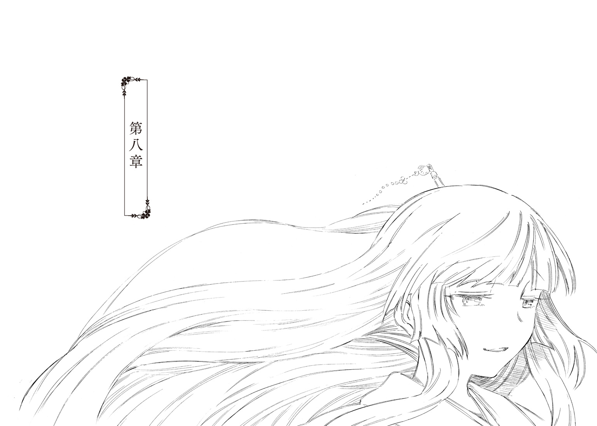
「――ほほーう。興味深い話ですね？」
桐島家の庭園、夕食後のティータイムにて。
一連の顛末を聞いた桐島春子は何度も頷いた。
それからニッコリ笑って、
「つまりそれは、わたし以外の女性に愛の告白をしたと。そういうことですよねお兄さま？」
「まあそうなんだけど」
肯定しながらも優樹は思う。実の妹からそんな怖い目で睨まれることではないはずだと。
「お兄さまにも困ったものです」
やれやれと首を振る春子。
「男の人にとって多少のやんちゃが必要なのはわかります。浮気のひとつやふたつは笑って許すのも妻たる者の器。ですが、こうたびたびおいたをされてはひとこと言わざるを得ないじゃないですか。もう少しわきまえてください」
「......いろいろ突っ込みたいところはあるが」
優樹は呆れつつ、
「なんつーか、ちょっと意外だな」
「意外ですか？ どのあたりが？」
「もっとぎゃーぎゃーわめかれると思ったんだよ。なんせお前以外の相手に結婚を申し込んだからさ。なのにけっこう冷静だな、みたいな」
「ああ。そんなことですか」
余裕のある笑み。
優樹はさらに不思議がって、
「お前いつも言ってるだろ？ 俺と結婚するって。わりと本気で」
「ええ。本気で言っていますが」
「じゃあ俺が他の誰かにプロポーズするのはまずいんじゃないの？」
「いいえ問題ありません」
にっこり笑って妹は言う。
「戦いというものは、最後の最後に立っている者が勝利を手に入れます。途中の勝ち負けで一喜一憂するのは体力の無駄というものです」
「はあ。なるほど」
「わたしはいずれこの国の法律を変えて、お兄さまと合法的に結婚するつもりですので。そこへ至るまでのことは割とどうでもいいのです。ハエやゴキブリがどれだけたかってこようともさほど気にはなりません」
「............」
とても小学生とは思えない発言だった。
則天武后の生まれ変わり説が、また現実味を帯びてくる。
「んでもさ」
優樹は食い下がる。
ここまで自信満々の態度を取られると、ちょっとは突っ込んでみたくなるのが人情。
「実際に俺が結婚しちゃったらお前はどうするんだ？ 大人しく認めるわけ？」
「まさか。物事には線引きというものがあります。おいたまでは許しますが、それ以上のことは認めてあげません」
「でも俺、結婚するよ？ 本気で」
「努力はどうぞご自由になさってください。がんばっているお兄さまを見るの、わたし好きですから♥」
「父さんと母さんが反対しても押し切るよ？」
「あ、駆け落ちする時はあらかじめ言ってくださいね。わたし、お兄さまにどこまでもついていきますから♥」
「............」
呆れるほどいつもの妹――だが。優樹は違和感を覚えた。
春子の口ぶりには何か裏を感じる。
「ちょっと気になるんだけど」
「何をです？」
「お前の言い方ってさ。俺が結婚できないのが前提に聞こえるんだよな」
「できませんよ」
断言した。
迷いなく、淀みなく。
まるで予言のように。
「あの白髪女とお兄さまは結婚できません。お兄さまがどれだけ本気になってもです」
「......なんでそう思う？」
「女のカンです♥」
「嘘だな。お前のカンは野生動物なみだけど、お前はカンに頼らない」
「はい、さすがはお兄さまです。わたしのことをよくわかっていらっしゃいます」
笑顔で紅茶をすする妹。
優樹は頭を掻きながら、
「じゃあ話を変えるけど」
「はい」
「神鳴沢が学校で立場が悪くなったのって、お前が裏で手を回してたんだよな？」
「はい」
「......なんでそんなあっさり認める？」
「気づいてもらえるようにやったからです」
あっさり白状して、
「だって不自然でしょう？ 最初はむしろ喜んで迎え入れられてた転校生が、どうしてわずかな間で嫌われるようになったのか。公園で花を摘んだぐらいのことをわざわざ告げ口して問題を大きくしたのは誰なのか。ちょっと考えれば、何かおかしいことに気づけるはずです」
小岩井来海のことを思い出す。
煮え切らない態度を何度も見せた委員長。たぶん彼女もまた、何かに気づいていたのではないか。
「............」
カップに口を付けて間を取る。
感情の乱れはない。冷静に、正しく。現状に対処しなければ。
「なんでだ？」
まずはそう訊いた。
「なんでそんなことを？ そんなに神鳴沢のことが気に入らなかったのか？」
敵視しているというだけなら来海だって同じはずだ。
というかどんな女性であれ、兄のそばにまとわりつくことをこの妹は認めてないが――それでも今回みたいな強硬手段を、優樹の不興を買うことがわかりきっている手段を、これまでは採ってこなかったのに。
それがなぜ今回に限って？
「二度目の警告ですお兄さま」
質問には答えず、妹は別なことを言った。
「あの白髪女には関わらないでください」
「............」
カップを置いて妹を見る。
ちゃらけた様子はない。
我を忘れた様子もない。
背筋を伸ばし、落ち着いた声音で。まるで裁判官が被告人へ勧告するような。
以前も聞いた〝関わらないでください〟の言葉。
確信と警戒がにじみ出るその言い方に、優樹もまた背筋を伸ばした。
「なあ春子」
「はい」
「前に言ってたよな？ 調べておきますって。神鳴沢のこと」
四月の初め、まだ世界が転校してきたばかりのころ。
気になるからと言って春子は自らその役を買って出た。
そして買って出たからには調べ上げたはずである。神鳴沢世界のことを可能な限り詳細に。桐島製薬の力をバックに、彼女らしい強かさと綿密さで。
その結果をまだ聞いていない。
「はい。調べました」
うなずいて、春子はお茶のお代わりをいれる。
そうして世間話の延長みたいに彼女は言った。
「お兄さま。『九十九機関』という名前に心当たりは？」
「......？ いや。ぜんぜん聞いたことないけど」
「なるほど。そうですか」
「どうかしたのか？ そのナントカ機関ってやつが」
「いえ。知らないのであれば別に」
首を振る春子。
それから彼女はいくぶん表情をやわらげて、
「この話はここまでにしておきましょう。せっかくのお茶がまずくなってしまいます」
「そか。わかった」
優樹はそれ以上の追及をやめた。
妹はガンコである。彼女が『ここまで』と言ったなら、たとえ天地がひっくり返ってもそのとおりになる。
「春子はお兄さまのために全力を尽くします」
談笑の最後に妹はそう言った。
「お兄さまを護り、お兄さまの利益になるよう、春子はなんでもいたします。なのでどうぞ安心してくださいね」
優樹は苦笑いでその言葉を聞いた。
歳の離れたこの妹に、これまでどれほど助けられてきたことだろう。
これ以上借りを作ったらいよいよ頭が上がらなくなるな、とボヤきつつ、だけどきっとこの先も妹の世話にならずにはいられないだろうな、と確信させられる優樹だった。
......つまり、その程度にしか受け止めていなかったのだ彼は。
則天武后の生まれ変わりが、普段とはちがう言動を取っていることの意味を、平凡で日常な一コマとしてしか捉えていなかったのだ。
ツケはすぐに回ってくる。
一年を待たずあっという間に。
†
「――やはりウエディングドレスがいいと思うのだ」
神鳴沢家の屋敷にて。
屋敷の主は熱弁していた。
「細かくてふわふわした刺繍がたくさん施してあるドレスだ。もちろんシミひとつない、真っ白なものでないとだめだぞ？」
夜である。
草木も寝静まる夜。
彼女は自らの部屋で、着衣の召し替えをしているところだった。
「だけど別に値段の高いものでなくていいのだ。きれいなものでさえあればいい。どこでも手に入るようなもので十分だ」
風もないのに電灯がゆらめいた。
ベッドの枕元、薄黄色い明かりがひとつだけ灯っている。
その明かりが部屋の主を、神鳴沢世界の影を、壁に長く引いている。
「とはいえ晴れの舞台に上がるのだ。それなりに見栄えのいいドレスでなくてはな。たとえばそう――胸元がすこし大胆に開いているのもいいな。うん、そういう時ぐらいはいいだろう。ちょっと挑戦してみてもいいな。うん」
召し替えを担っているのはメイドのおチヨだ。
主のつぶやきに相づちを打ちながら、ひとり手を動かしている。
髪を結い、爪を磨き、化粧をほどこして。彼女が仕える相手のためにせっせと容儀を整えている。
世界が身に纏っているのは白装束。
もちろんウエディングドレスではない。
「我が主がその気になれば」
手を止めずにおチヨが言う。
「さぞかしお綺麗になるでしょうね」
「だといいのだが。わたしは綺麗になれるだろうか？」
「なれますとも。このおチヨが責任をもって、どこへ出しても恥ずかしくないだけの淑女に仕上げて差し上げます」
「そ、そうか。そうなるといいのだが――」
「優樹様もきっと目を奪われることでしょう。たくさん褒めてくださいますよ。あの方は案外素直なお人柄ですから」
「............」
世界は口をつぐんだ。
ぼんやりした明かりしかない部屋の中でもわかるほど、その頬が赤い。
「なあおチヨ」
「はい」
「正直なことを言っていいだろうか」
「なんなりと」
「わたしはな、うれしかったのだ」
しみじみと世界は言った。
手のひらからこぼれる砂の一粒一粒を愛おしむように。
「本当にうれしかったのだ。優樹から結婚を望まれて。とてもとてもうれしかったのだ」
「はい。ようございました」
「あまりにもいきなりすぎて、わたしは逃げ出してしまったが」
「仕方のないことです。あの方はそういうところがありますから。素直なだけに」
「まったくな。あの男は何を考えているのだろうな」
と言って世界は笑う。
「妙におせっかいで、何かと構ってくれて、事あるごとに気を掛けてくれて。わたしに新しい世界を見せてくれるのはいつだってあの男だった」
「はい。本当にそうでしたね」
「あの男のせいでわたしはずいぶんと変わってしまったよ。近ごろはいろんなことを考えるのだ。本当にいろいろ。庭で咲いている花のこととか、窓から見える空のこととか。流れている雲のこととか、飛んでいる鳥のこととか。これまで目にも留めなかったもののことをたくさん考えるのだ。ちょっと前までは考えることそのものをやめていたのに」
雨が降ってきた。
ぽつぽつと屋根を鳴らしていた水滴はたちまち土砂降りになる。
雨水が雨樋を駆け下り、吐瀉物のような音を立てて地面を叩く。
「それとな、いろんなことを鮮やかに感じるようになってきた。ウイスキーグラスの手触りだとか、葉巻の煙が鼻をくすぐる感覚だとか――当たり前だったものが、当たり前じゃないように感じるのだ」
薄明かりが揺らめく。
おチヨは静かに「ようございました」と応える。
「夢のようだ。毎日が。わたしがこんな毎日を送れるなんてなあ。変われば変わるものなのだなあ」
はふう、と吐息をついて。
まさしく夢見心地の瞳で、世界はつぶやきを漏らす。
「生きてるって、こういうことなのだな」
用意が整った。
部屋を出る。
おチヨに先導されて暗い廊下をゆく。
しばし沈黙が降りる。
「なあおチヨ」
沈黙を破って世界が口を開く。
「もしも、もしもわたしが結婚したら――」
「できませんよ」
断言した。
迷いなく、淀みなく。
まるで予言のように。
否。あらかじめ定められた運命であるかのように。
「うむ。そうだな」
世界は笑った。
「詮無いことを言った。忘れてくれ」
ふたりは屋敷の地下に降りた。
そこにはひときわいかめしく、訪れる者を見下ろすような大扉が居座っている。
死を幾度となく、星の数よりも多く呑み込んできた、貪欲な坩堝。
苦痛と引き替えに世の理を永らえさせてきた、悪夢の混沌。
神鳴沢世界の〝職場〟である。
「では。本日もよろしくお願い致します」
おチヨが深々と一礼する。
世界は「うむ」とちいさくうなずく。
扉の前でそのまましばし。重苦しい時間が流れる。
「どうされました？」
ちらりと視線だけ上げて、メイドは主の様子をうかがう。
「......はは」
渇いた笑いが地下に響いた。
背中を向けたまま神鳴沢世界は弱々しく笑っている。
「すまぬ。動けないのだ。足が震えて」
「............」
「ひさしぶりだなこんなのは。何年ぶりだろう......十年か百年か。忘れてしまったな。もうすっかり」
「............」
「生きているという実感が湧いたら、急に何もかもが怖くなってしまったのだ。ふふ、おかしなものだな」
「......我が主を」
おチヨが口を開く。
その声は彼女にしてはめずらしく、苦しみに満ちている。
「誑かしてしまったのでしょうかわたしは。わたしが我が主に、外の世界を見ることをおすすめしたばかりに」
「それはちがう。わたしは貴殿に感謝しているのだ」
世界は首をふって、
「ずっとわたしは何も知らないままだった。何もかも忘れたまま、ただただ自分の務めを果たしてきた。祭り上げられるようないいものではない。からくり仕掛けの人形と大して変わらない存在で、それを変えるきっかけを貴殿は作ってくれ――」
げほっ、と。
苦しげな音が響く。
世界の口から漏れたものだった。
そして口からこぼれたのは音だけではなかった。
「............っ」
口元を手で押さえ、背中を丸める世界。
ぽたりぽたりとこぼれていた赤いものは、すぐにひとすじの流れとなり、広く広く床に染みを作る。
「我が主......！」
「よい」
駆け寄ろうとしたメイドを空いた手で抑え、ごくりと喉を鳴らして血を飲み込む。
何度かそうしてから「ふう」と息をつく。
それから胸元に目をやり、後ろを振り返って、
「すまぬ。せっかくあつらえてくれた服を汚してしまった」
と笑った。
「............っ」
おチヨの顔が歪む。
そうして何かを逡巡するように視線をゆらしていた彼女は。
やがて意を決したようにこう言った。
「ようございます。すべてお捨てなさいませ」
「おチヨ......？」
「すべてを捨ててお逃げなさい。我が主がお望みならわたしはお止めいたしません。いえむしろ全力でお手伝いさせていただきます」
「貴殿は何を言って――」
「捨てておしまいなさい。貴女はもう十分に、いえ十分すぎるほど務めを果たしてくださいました。貴女がひとりでこの世の理を護り、世界の形を保ち続けてくださいました。誰が文句をつけることがありましょう？ もうお好きなようになさっていいのです貴女は」
「............」
「貴女が首を縦に振ってくださるのなら。わたしは命をなげうってお手伝いいたします。どうぞご決断を」
沈黙がおりる。
ひどく重い、しかし長くはない沈黙だった。
すぐに世界は笑って言った。
「おチヨ。貴殿はやさしいな」
「......わたしが？」
「器用なようでいて不器用な貴殿のやさしさを、いつも感じているよ。いつだって貴殿はわたしのことを思ってくれている。これからもずっと貴殿はわたしに仕えてくれ」
「............」
「クビにするなどとたまに言ったりするが、あれはうそだ」
「......やさしい、というのは――」
それは貴女のことだとおチヨは思う。
神鳴沢世界ほどやさしいひとは他にいない。
彼女は名前のとおりに、文字どおりに、世界を救ってきた。それもたったひとりで、泣き言のひとつも漏らさず、想像を絶する苦しみを一身に受けて。
どうか、どうか――とおチヨは願う。
どうか我が主よ。そんなやさしい言葉をわたしにかけないでください。
貴女にやさしくされるたび、わたしは自分の無力さに、何もできない無能さに、打ちひしがれるのです。
あまりにも長きにわたって貴女を見守り続け、わたしの心はすっかり枯れ果てました。
枯れ果てて、やっと楽になれたのに。
なのに貴女にやさしくされると、枯れたはずの心が痛むのです。
だから我が主よ。
どうかわたしに、ひとの心を取り戻させないでください。
「――――」
千の言葉を飲み込み、おチヨはひとつ吐息する。
そして次の瞬間にはもう、いつもの彼女に戻っていた。
深々と頭を下げて、
「出過ぎたことを申しました。お許しください」
「気にすることはない」
世界は鷹揚に首を振って、
「むしろ助かった。さすがはおチヨだ」
「............？」
「ほら。震えが止まった」
ぎぎぎぎ、と。
音を立てて扉がひらく。
その扉が重々しく開いたさらなる奥に。テニスぐらいはフルコートでやれそうな、殺風景で何もない空間が広がっている。
「やらなければいけないことがある。それはわたしにしかできない。だったら答えはひとつだ。そうだろうおチヨ？」
「............」
間を置いたのは一瞬。
神と共に生きるメイドの顔には、己の務めを果たす意思のみがある。
「左様でございます我が主。本日もよろしくお願い致します」
「うむ」
メイドに見送られ、世界は一歩を踏み出す。
闇が少女を呑み、扉がぎぎぎぎと音を立てて閉じていく。
世界が死ぬまであと半年。
あとがき
鈴木大輔です。『文句の付けようがないラブコメ』の二巻をお届けします。
†
一巻がああいう終わり方をした本作ですが、二巻はこういう形になりました。
読んだ方はわかると思いますが、前後編です。次の三巻で今回の〝ゲーム〟は完結する予定です。
とはいえ、優樹と世界の戦いはまだ始まったばかり――今後ともぜひ続きを見守っていただければ。
またＷＥＢコミックサイト『となりのヤングジャンプ』にて、イラスト担当の肋兵器さんの手によるコミカライズが連載中です。
こちらは鈴木による書き下ろし脚本を元にしており、原作とは一風変わったテイストの作品に仕上がっています。併せて一読いただければ幸いです。
†
ちなみに作中において、神鳴沢世界はいろんなお酒を集め、飲んでいますが。今のところ銘柄が明示されているのは一本だけ。スコッチウイスキーのグレンアルビンです。
こちらの蒸留所は閉鎖されて三十年が経ち、もはや新たなボトルがリリースされることはほとんどありません。もしどこかのバーでこのレアなウイスキーを見つけたなら、その時はぜひオーダーしてみてください。神鳴沢世界の気分が味わえるかもしれません。
そしてその際はぜひ作者に報告してください。よろしければボトルの写真付きで。
†
取り急ぎあとがきでした。
三巻でまたお会いしましょう。
一月吉日 鈴木大輔
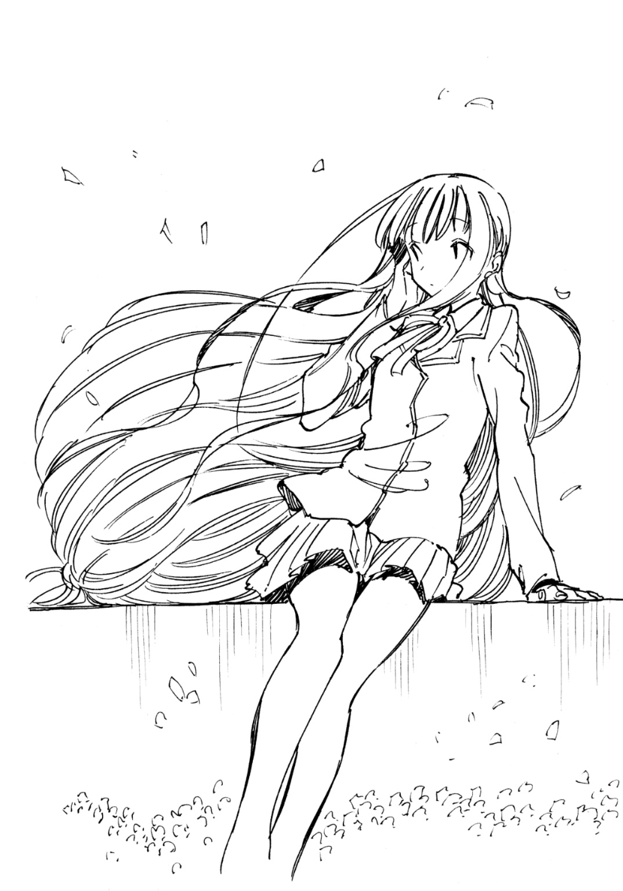
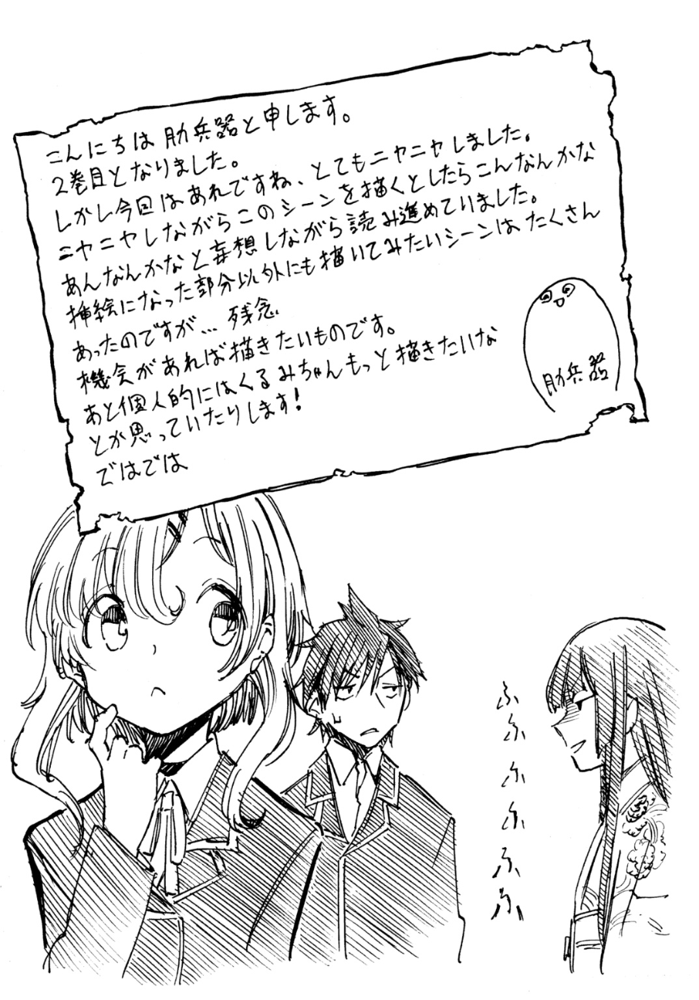
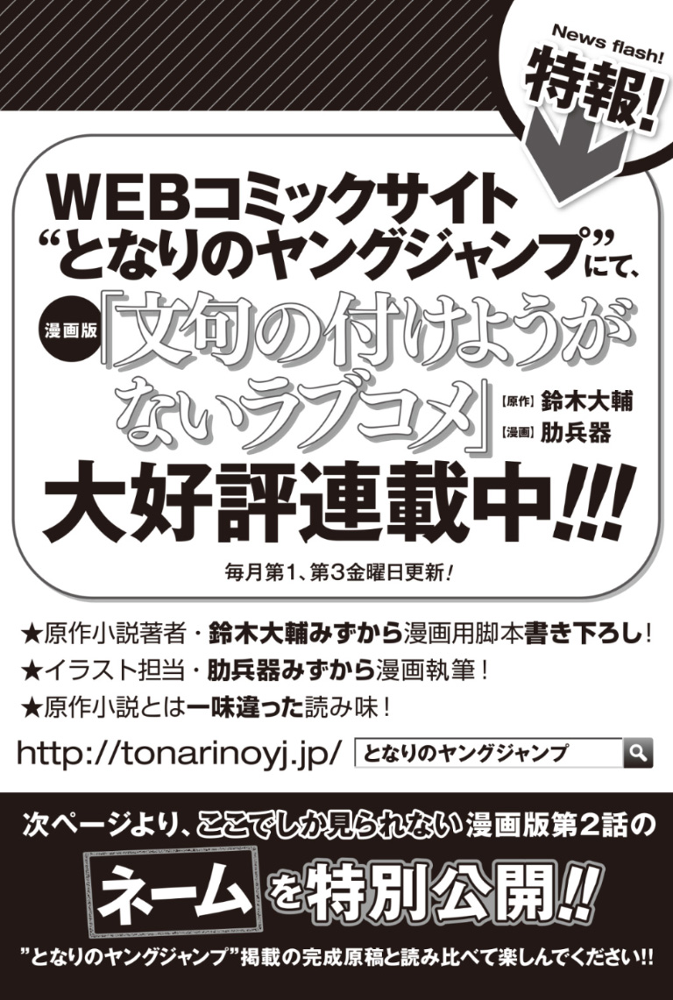
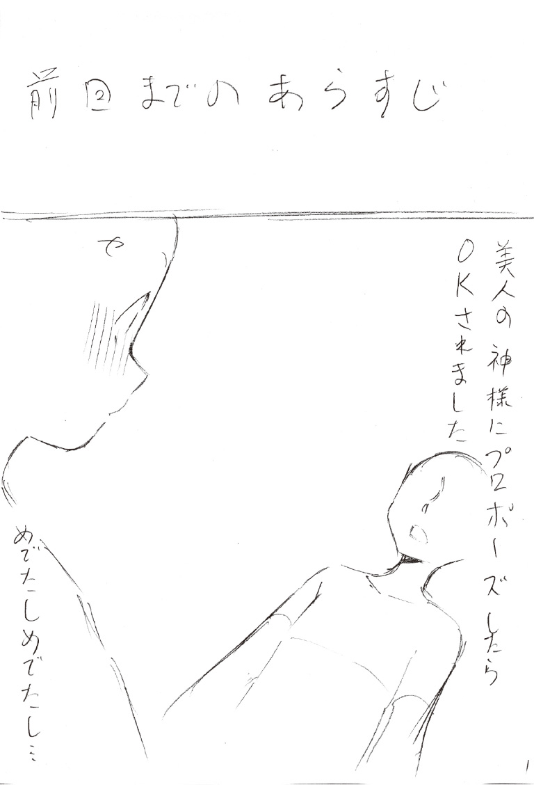
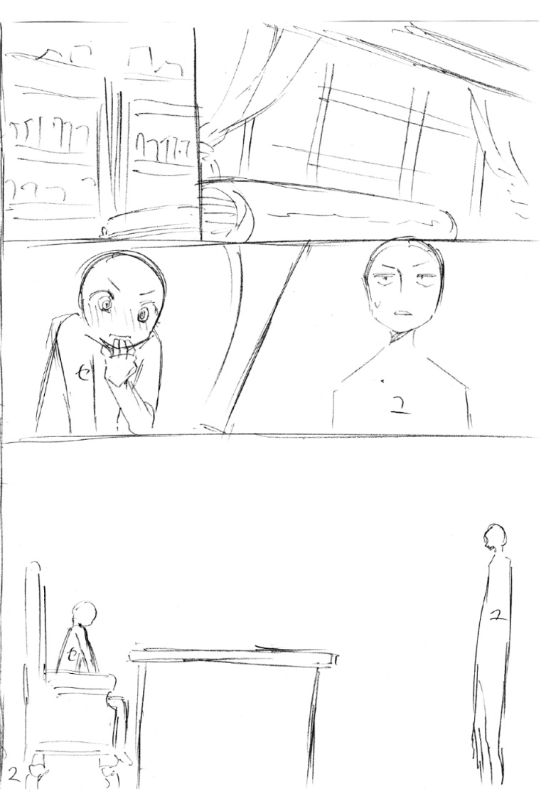
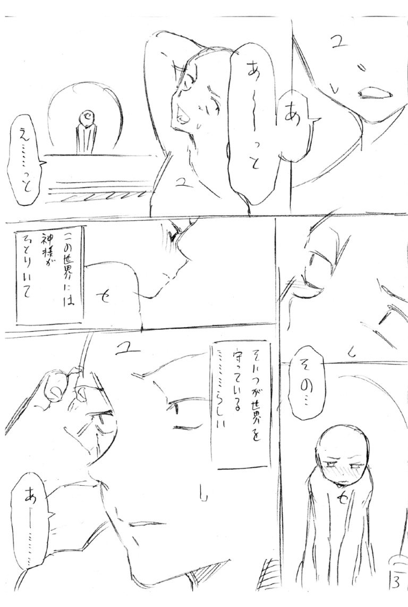
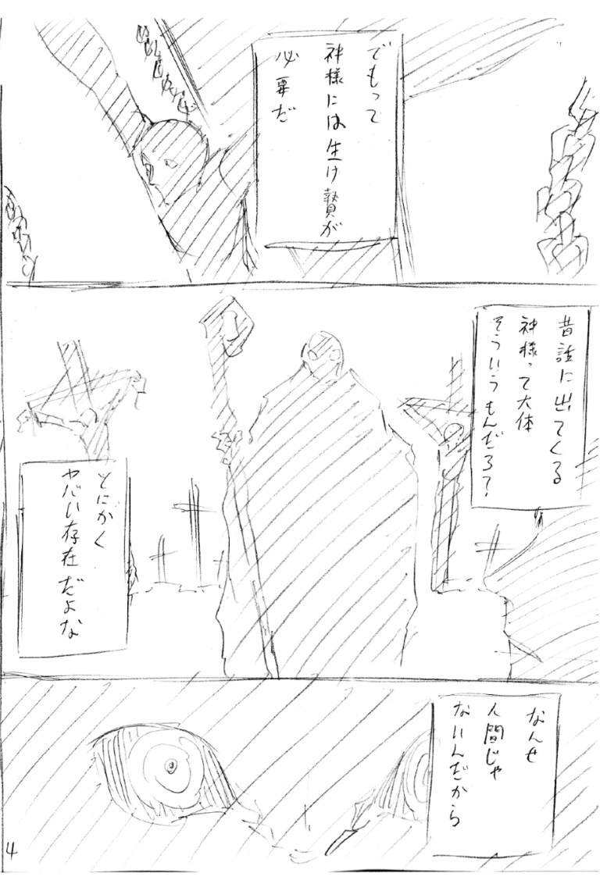
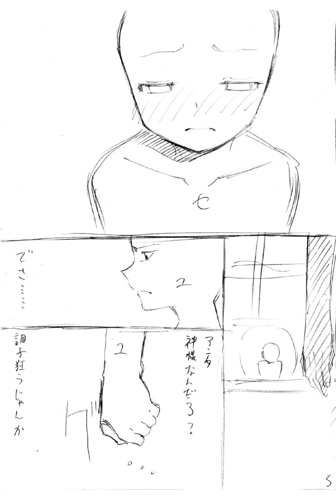
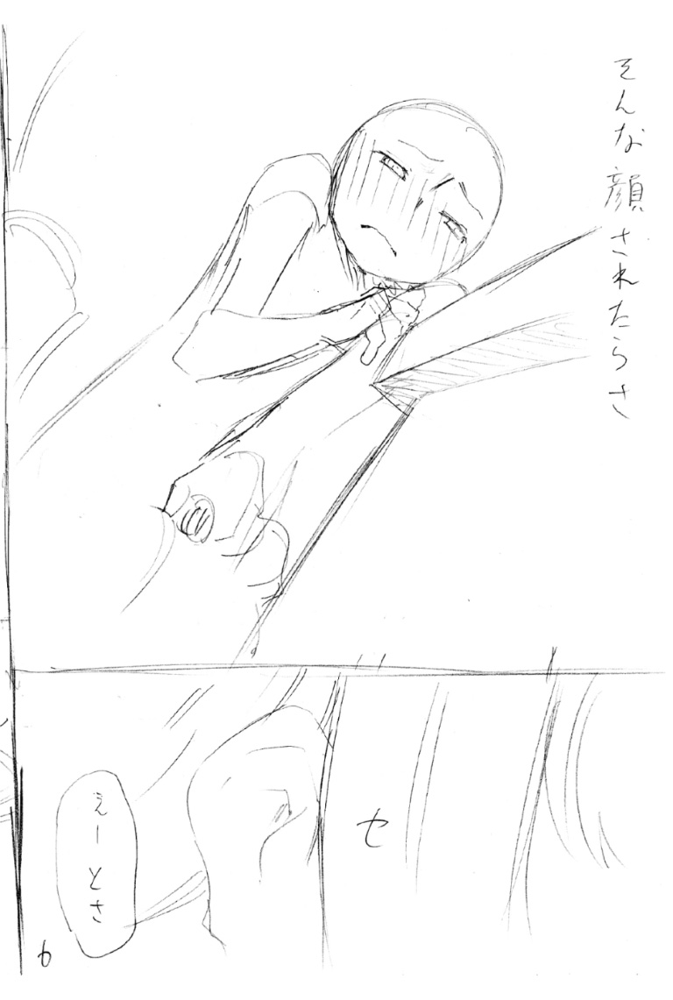
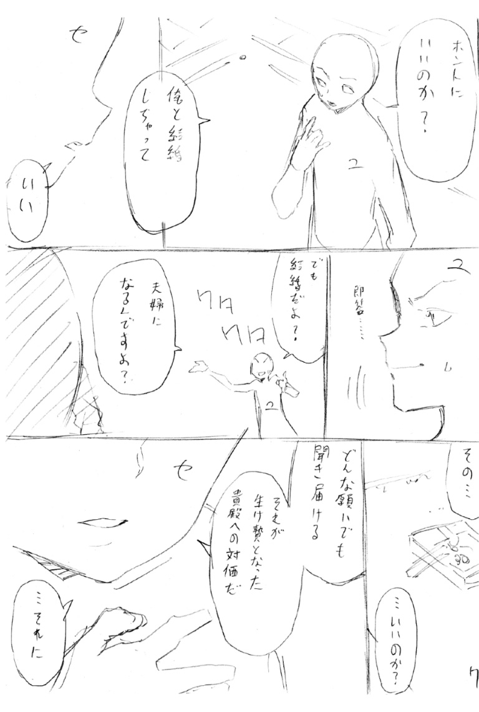
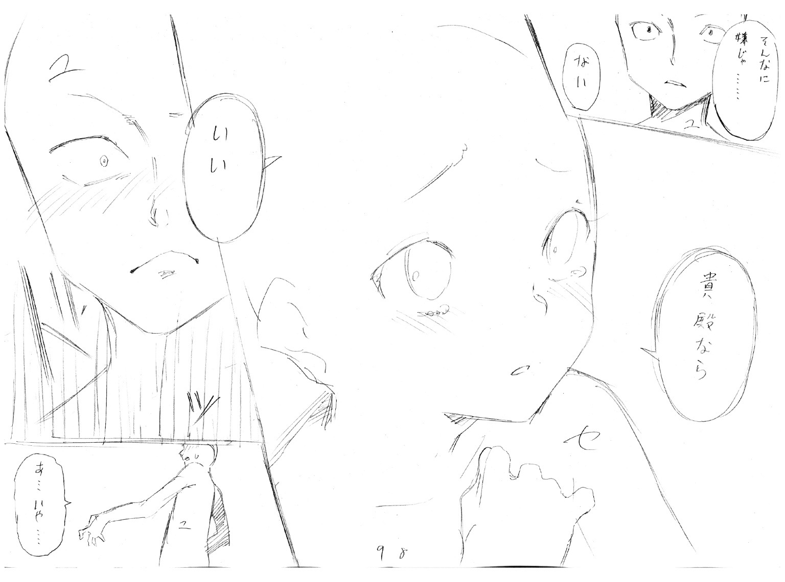
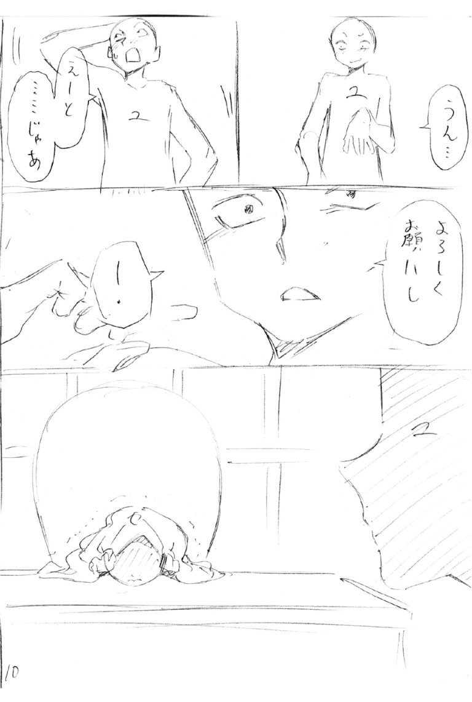
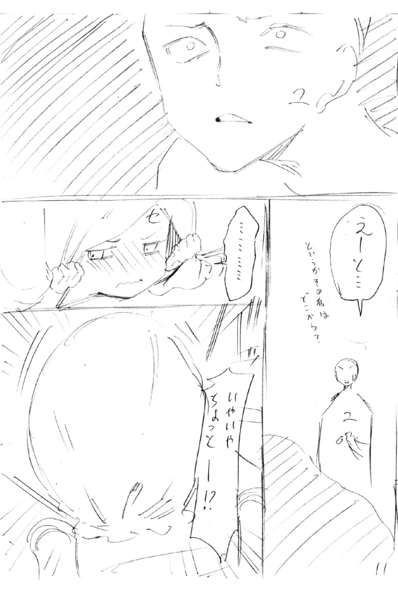
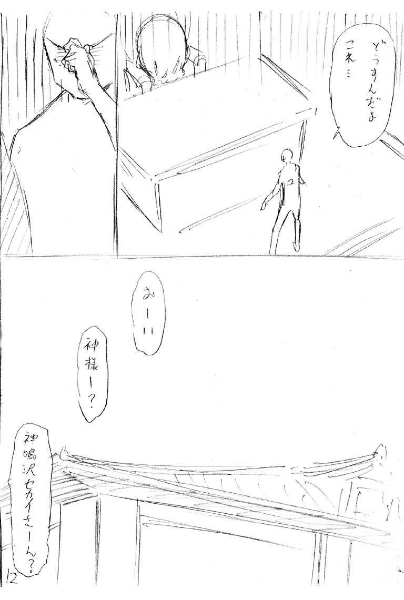
著者紹介
鈴木大輔 すずき だいすけ
第16回ファンタジア長編小説大賞にて佳作を受賞。
代表作に『ご愁傷さま二ノ宮くん』（ファンタジア文庫）、『お兄ちゃんだけど愛さえあれば関係ないよねっ』『今日から僕は！』（以上、ＭＦ文庫Ｊ）など。
illustration
肋兵器 あばらへいき
寒い時期ですね。
この時期は部屋を暖かくしないと手が冷たくなってしまって絵を描くのが大変です。なので部屋を暖かくするためにエアコンを使うことが多くなります。
電気代も上がっていきます。大変です。
ダッシュエックス文庫DIGITAL
文句の付けようがないラブコメ ２
著者 鈴木大輔
(C) DAISUKE SUZUKI 2015
２０１５年３月31日発行
この電子書籍は、ダッシュエックス文庫「文句の付けようがないラブコメ ２」
２０１５年２月28日発行の第１刷を底本としています。
発行者 鈴木晴彦
発行所 株式会社 集英社
〒１０１－８０５０
東京都千代田区一ツ橋２丁目５番10号
０３－３２３０－６０８０（読者係）
制作所 株式会社デジタルディレクターズ
本作品の全部また一部を無断で複製、転載、改竄、インターネット上に掲載すること、および有償無償に関わらず、本データを第三者に譲渡することを禁じます。なお個人利用の目的であっても、コピーガードを解除しての複製は、法律で禁じられています。